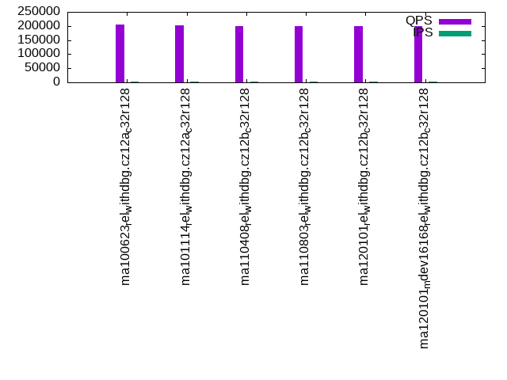

This is a report for the insert benchmark with 4000M docs and 20 client(s). It is generated by scripts (bash, awk, sed) and Tufte might not be impressed. An overview of the insert benchmark is here and a short update is here. Below, by DBMS, I mean DBMS+version.config. An example is my8020.c10b40 where my means MySQL, 8020 is version 8.0.20 and c10b40 is the name for the configuration file.
The test server has 48 AMD cores, 128G RAM and RAID 10 with 2 NVMe devices. It is described here. The benchmark was run with 20 clients and there were 1 or 3 connections per client (1 for queries or inserts without rate limits, 1+1 for rate limited inserts+deletes). It uses 1 table with a table per client. It loads 200M rows per table without secondary indexes, creates 3 secondary indexes per table, then inserts 4m+1m rows per table with a delete per insert to avoid growing the table. It then does 6 read+write tests for 3600s each that do queries as fast as possible with 100,100,500,500,1000,1000 inserts/s and the same for deletes/s per client concurrent with the queries. The database is larger than memory. Clients and the DBMS share one server. The per-database configs are in the per-database subdirectories here.
The tested DBMS are:
The numbers are inserts/s for l.i0, l.i1 and l.i2, indexed docs (or rows) /s for l.x and queries/s for qr100, qp100 thru qr1000, qp1000" The values are the average rate over the entire test for inserts (IPS) and queries (QPS). The range of values for IPS and QPS is split into 3 parts: bottom 25%, middle 50%, top 25%. Values in the bottom 25% have a red background, values in the top 25% have a green background and values in the middle have no color. A gray background is used for values that can be ignored because the DBMS did not sustain the target insert rate. Red backgrounds are not used when the minimum value is within 80% of the max value.
| dbms | l.i0 | l.x | l.i1 | l.i2 | qr100 | qp100 | qr500 | qp500 | qr1000 | qp1000 |
|---|---|---|---|---|---|---|---|---|---|---|
| ma100623_rel_withdbg.cz12a_c32r128 | 322035 | 1564945 | 9715 | 8140 | 203898 | 19970 | 158867 | 10599 | 106458 | 8999 |
| ma101114_rel_withdbg.cz12a_c32r128 | 1027221 | 1584786 | 8619 | 8217 | 203291 | 19394 | 141520 | 5444 | 105688 | 7854 |
| ma110408_rel_withdbg.cz12b_c32r128 | 957625 | 1546192 | 8270 | 8580 | 200829 | 19472 | 139982 | 5121 | 96466 | 7586 |
| ma110803_rel_withdbg.cz12b_c32r128 | 1013171 | 1565558 | 8265 | 8643 | 200466 | 19575 | 141339 | 5051 | 97069 | 7545 |
| ma120101_rel_withdbg.cz12b_c32r128 | 1004268 | 1537279 | 8305 | 8602 | 199066 | 19507 | 142687 | 5152 | 97256 | 7599 |
| ma120101_mdev16168_rel_withdbg.cz12b_c32r128 | 1410935 | 1615509 | 8336 | 8688 | 198713 | 19587 | 142998 | 5159 | 97423 | 7592 |
This table has relative throughput, throughput for the DBMS relative to the DBMS in the first line, using the absolute throughput from the previous table. Values less than 0.95 have a yellow background. Values greater than 1.05 have a blue background.
| dbms | l.i0 | l.x | l.i1 | l.i2 | qr100 | qp100 | qr500 | qp500 | qr1000 | qp1000 |
|---|---|---|---|---|---|---|---|---|---|---|
| ma100623_rel_withdbg.cz12a_c32r128 | 1.00 | 1.00 | 1.00 | 1.00 | 1.00 | 1.00 | 1.00 | 1.00 | 1.00 | 1.00 |
| ma101114_rel_withdbg.cz12a_c32r128 | 3.19 | 1.01 | 0.89 | 1.01 | 1.00 | 0.97 | 0.89 | 0.51 | 0.99 | 0.87 |
| ma110408_rel_withdbg.cz12b_c32r128 | 2.97 | 0.99 | 0.85 | 1.05 | 0.98 | 0.98 | 0.88 | 0.48 | 0.91 | 0.84 |
| ma110803_rel_withdbg.cz12b_c32r128 | 3.15 | 1.00 | 0.85 | 1.06 | 0.98 | 0.98 | 0.89 | 0.48 | 0.91 | 0.84 |
| ma120101_rel_withdbg.cz12b_c32r128 | 3.12 | 0.98 | 0.85 | 1.06 | 0.98 | 0.98 | 0.90 | 0.49 | 0.91 | 0.84 |
| ma120101_mdev16168_rel_withdbg.cz12b_c32r128 | 4.38 | 1.03 | 0.86 | 1.07 | 0.97 | 0.98 | 0.90 | 0.49 | 0.92 | 0.84 |
This lists the average rate of inserts/s for the tests that do inserts concurrent with queries. For such tests the query rate is listed in the table above. The read+write tests are setup so that the insert rate should match the target rate every second. Cells that are not at least 95% of the target have a red background to indicate a failure to satisfy the target.
| dbms | qr100.L1 | qp100.L2 | qr500.L3 | qp500.L4 | qr1000.L5 | qp1000.L6 |
|---|---|---|---|---|---|---|
| ma100623_rel_withdbg.cz12a_c32r128 | 1987 | 1987 | 9936 | 9920 | 9779 | 7499 |
| ma101114_rel_withdbg.cz12a_c32r128 | 1988 | 1988 | 9939 | 6027 | 7631 | 6350 |
| ma110408_rel_withdbg.cz12b_c32r128 | 1987 | 1987 | 9934 | 5840 | 7646 | 6163 |
| ma110803_rel_withdbg.cz12b_c32r128 | 1987 | 1987 | 9934 | 5747 | 7592 | 6138 |
| ma120101_rel_withdbg.cz12b_c32r128 | 1987 | 1987 | 9936 | 5912 | 7663 | 6205 |
| ma120101_mdev16168_rel_withdbg.cz12b_c32r128 | 1987 | 1987 | 9934 | 5912 | 7711 | 6214 |
| target | 2000 | 2000 | 10000 | 10000 | 20000 | 20000 |
l.i0: load without secondary indexes. Graphs for performance per 1-second interval are here.
Average throughput:
Insert response time histogram: each cell has the percentage of responses that take <= the time in the header and max is the max response time in seconds. For the max column values in the top 25% of the range have a red background and in the bottom 25% of the range have a green background. The red background is not used when the min value is within 80% of the max value.
| dbms | 256us | 1ms | 4ms | 16ms | 64ms | 256ms | 1s | 4s | 16s | gt | max |
|---|---|---|---|---|---|---|---|---|---|---|---|
| ma100623_rel_withdbg.cz12a_c32r128 | 0.076 | 0.478 | 97.042 | 2.318 | 0.085 | nonzero | 0.550 | ||||
| ma101114_rel_withdbg.cz12a_c32r128 | 0.757 | 98.321 | 0.665 | 0.163 | 0.090 | 0.003 | 0.648 | ||||
| ma110408_rel_withdbg.cz12b_c32r128 | 0.669 | 97.871 | 1.200 | 0.169 | 0.088 | 0.003 | 0.693 | ||||
| ma110803_rel_withdbg.cz12b_c32r128 | 0.577 | 98.501 | 0.662 | 0.171 | 0.088 | 0.001 | 0.690 | ||||
| ma120101_rel_withdbg.cz12b_c32r128 | 0.786 | 98.601 | 0.356 | 0.168 | 0.088 | nonzero | 0.713 | ||||
| ma120101_mdev16168_rel_withdbg.cz12b_c32r128 | 3.258 | 96.409 | 0.079 | 0.169 | 0.085 | nonzero | 0.309 |
Performance metrics for the DBMS listed above. Some are normalized by throughput, others are not. Legend for results is here.
ips qps rps rmbps wps wmbps rpq rkbpq wpi wkbpi csps cpups cspq cpupq dbgb1 dbgb2 rss maxop p50 p99 tag 322035 0 1 0.0 2270.6 94.6 0.000 0.000 0.007 0.301 927491 50.9 2.880 76 263.2 365.1 101.2 0.550 16083 14384 ma100623_rel_withdbg.cz12a_c32r128 1027221 0 5 0.1 7282.6 309.4 0.000 0.000 0.007 0.308 188072 58.4 0.183 27 263.2 365.1 101.2 0.648 52344 30167 ma101114_rel_withdbg.cz12a_c32r128 957625 0 7 0.1 6043.3 276.4 0.000 0.000 0.006 0.296 171873 57.8 0.179 29 263.2 365.1 101.1 0.693 48348 26571 ma110408_rel_withdbg.cz12b_c32r128 1013171 0 3 0.0 6370.0 292.2 0.000 0.000 0.006 0.295 182470 58.3 0.180 28 263.2 365.1 101.2 0.690 51044 39957 ma110803_rel_withdbg.cz12b_c32r128 1004268 0 5 0.1 6179.4 287.3 0.000 0.000 0.006 0.293 178307 59.0 0.178 28 263.2 365.1 101.2 0.713 50645 41355 ma120101_rel_withdbg.cz12b_c32r128 1410935 0 6 0.1 8211.6 370.4 0.000 0.000 0.006 0.269 241658 49.7 0.171 17 263.2 364.0 101.2 0.309 70147 58456 ma120101_mdev16168_rel_withdbg.cz12b_c32r128
Average values from iostat.
r/s rkB/s rrqm/s %rrqm r_await rareq-s w/s wkB/s wrqm/s %wrqm w_await wareq-s d/s dkB/s drqm/s %drqm d_await dareq-s f/s f_await aqu-sz %util 1.180 13.23 0.000 0.000 0.109 5.437 2270.6 96901.0 0.000 0.000 6.783 48.75 0.000 0.000 0.000 0.000 0.000 0.000 0.000 0.000 13.05 7.508 ma100623_rel_withdbg.cz12a_c32r128 4.575 62.96 0.000 0.000 0.172 10.08 7282.6 316863 0.000 0.000 7.178 45.23 0.000 0.000 0.000 0.000 0.000 0.000 0.000 0.000 49.05 22.33 ma101114_rel_withdbg.cz12a_c32r128 6.679 91.77 0.000 0.000 0.144 11.96 6043.3 283078 0.000 0.000 9.978 57.01 0.000 0.000 0.000 0.000 0.000 0.000 0.000 0.000 46.80 20.70 ma110408_rel_withdbg.cz12b_c32r128 3.193 33.34 0.000 0.000 0.129 6.861 6370.0 299205 0.000 0.000 11.29 56.76 0.000 0.000 0.000 0.000 0.000 0.000 0.000 0.000 57.84 21.92 ma110803_rel_withdbg.cz12b_c32r128 5.164 68.51 0.000 0.000 0.146 10.67 6179.4 294240 0.000 0.000 10.88 57.36 0.000 0.000 0.000 0.000 0.000 0.000 0.000 0.000 54.04 21.52 ma120101_rel_withdbg.cz12b_c32r128 5.548 65.69 0.000 0.000 0.162 9.208 8211.6 379242 0.000 0.000 12.53 62.57 0.000 0.000 0.000 0.000 0.000 0.000 0.000 0.000 76.74 27.47 ma120101_mdev16168_rel_withdbg.cz12b_c32r128
l.x: create secondary indexes.
Average throughput:
Performance metrics for the DBMS listed above. Some are normalized by throughput, others are not. Legend for results is here.
ips qps rps rmbps wps wmbps rpq rkbpq wpi wkbpi csps cpups cspq cpupq dbgb1 dbgb2 rss maxop p50 p99 tag 1564945 0 17128 1395.6 19168.8 1562.6 0.011 0.913 0.012 1.022 105530 23.3 0.067 7 557.5 659.4 101.5 0.005 NA NA ma100623_rel_withdbg.cz12a_c32r128 1584786 0 17307 1406.1 19751.6 1581.8 0.011 0.909 0.012 1.022 106423 25.1 0.067 8 557.5 659.4 100.8 0.002 NA NA ma101114_rel_withdbg.cz12a_c32r128 1546192 0 16844 1382.4 19340.6 1544.4 0.011 0.916 0.013 1.023 100078 25.2 0.065 8 557.5 659.4 100.8 0.004 NA NA ma110408_rel_withdbg.cz12b_c32r128 1565558 0 17024 1396.6 20480.3 1577.6 0.011 0.913 0.013 1.032 115982 23.9 0.074 7 557.5 659.4 100.7 0.004 NA NA ma110803_rel_withdbg.cz12b_c32r128 1537279 0 16749 1373.8 20104.5 1549.2 0.011 0.915 0.013 1.032 108785 24.7 0.071 8 557.5 659.4 100.7 0.004 NA NA ma120101_rel_withdbg.cz12b_c32r128 1615509 0 17589 1445.1 19617.1 1603.7 0.011 0.916 0.012 1.016 109482 24.1 0.068 7 557.5 658.3 100.7 0.004 NA NA ma120101_mdev16168_rel_withdbg.cz12b_c32r128
Average values from iostat.
r/s rkB/s rrqm/s %rrqm r_await rareq-s w/s wkB/s wrqm/s %wrqm w_await wareq-s d/s dkB/s drqm/s %drqm d_await dareq-s f/s f_await aqu-sz %util
l.i1: continue load after secondary indexes created with 50 inserts per transaction. Graphs for performance per 1-second interval are here.
Average throughput:
Insert response time histogram: each cell has the percentage of responses that take <= the time in the header and max is the max response time in seconds. For the max column values in the top 25% of the range have a red background and in the bottom 25% of the range have a green background. The red background is not used when the min value is within 80% of the max value.
| dbms | 256us | 1ms | 4ms | 16ms | 64ms | 256ms | 1s | 4s | 16s | gt | max |
|---|---|---|---|---|---|---|---|---|---|---|---|
| ma100623_rel_withdbg.cz12a_c32r128 | 0.085 | 57.619 | 23.436 | 18.859 | 0.562 | ||||||
| ma101114_rel_withdbg.cz12a_c32r128 | 0.155 | 35.710 | 44.487 | 19.647 | 0.702 | ||||||
| ma110408_rel_withdbg.cz12b_c32r128 | 0.275 | 27.766 | 52.651 | 19.308 | 0.900 | ||||||
| ma110803_rel_withdbg.cz12b_c32r128 | 0.325 | 27.741 | 52.793 | 19.141 | 0.822 | ||||||
| ma120101_rel_withdbg.cz12b_c32r128 | 0.335 | 28.373 | 52.121 | 19.170 | 0.790 | ||||||
| ma120101_mdev16168_rel_withdbg.cz12b_c32r128 | 0.297 | 28.030 | 52.675 | 18.999 | 0.979 |
Delete response time histogram: each cell has the percentage of responses that take <= the time in the header and max is the max response time in seconds. For the max column values in the top 25% of the range have a red background and in the bottom 25% of the range have a green background. The red background is not used when the min value is within 80% of the max value.
| dbms | 256us | 1ms | 4ms | 16ms | 64ms | 256ms | 1s | 4s | 16s | gt | max |
|---|---|---|---|---|---|---|---|---|---|---|---|
| ma100623_rel_withdbg.cz12a_c32r128 | 0.216 | 73.619 | 7.729 | 18.436 | 0.522 | ||||||
| ma101114_rel_withdbg.cz12a_c32r128 | 2.194 | 61.981 | 16.564 | 19.261 | 0.477 | ||||||
| ma110408_rel_withdbg.cz12b_c32r128 | 2.304 | 48.672 | 30.096 | 18.927 | 0.561 | ||||||
| ma110803_rel_withdbg.cz12b_c32r128 | 2.596 | 48.034 | 30.601 | 18.768 | 0.520 | ||||||
| ma120101_rel_withdbg.cz12b_c32r128 | 2.529 | 48.789 | 29.895 | 18.787 | 0.736 | ||||||
| ma120101_mdev16168_rel_withdbg.cz12b_c32r128 | 2.402 | 49.279 | 29.628 | 18.691 | 0.539 |
Performance metrics for the DBMS listed above. Some are normalized by throughput, others are not. Legend for results is here.
ips qps rps rmbps wps wmbps rpq rkbpq wpi wkbpi csps cpups cspq cpupq dbgb1 dbgb2 rss maxop p50 p99 tag 9715 0 58043 906.9 57222.8 1566.9 5.975 95.595 5.890 165.164 817251 17.0 84.126 840 728.6 830.8 100.4 0.562 549 150 ma100623_rel_withdbg.cz12a_c32r128 8619 0 51655 807.1 50703.4 1386.4 5.993 95.894 5.883 164.716 936798 17.1 108.692 952 730.1 832.3 100.4 0.702 450 150 ma101114_rel_withdbg.cz12a_c32r128 8270 0 50028 781.6 49968.4 1340.9 6.050 96.790 6.042 166.047 1011506 16.7 122.318 969 730.1 832.4 100.4 0.900 400 150 ma110408_rel_withdbg.cz12b_c32r128 8265 0 49908 779.8 49680.0 1334.7 6.038 96.606 6.011 165.361 1018980 16.6 123.284 964 730.3 832.5 100.4 0.822 450 150 ma110803_rel_withdbg.cz12b_c32r128 8305 0 50159 783.7 49755.5 1339.8 6.040 96.634 5.991 165.198 1012811 16.5 121.956 954 730.2 832.5 100.5 0.790 450 150 ma120101_rel_withdbg.cz12b_c32r128 8336 0 50336 786.5 50445.0 1350.9 6.039 96.612 6.052 165.942 1018823 16.6 122.221 956 730.2 832.4 100.4 0.979 450 150 ma120101_mdev16168_rel_withdbg.cz12b_c32r128
Average values from iostat.
r/s rkB/s rrqm/s %rrqm r_await rareq-s w/s wkB/s wrqm/s %wrqm w_await wareq-s d/s dkB/s drqm/s %drqm d_await dareq-s f/s f_await aqu-sz %util 58043.4 928669 0.000 0.000 0.224 16.00 57222.8 1604499 0.000 0.000 0.160 28.12 0.000 0.000 0.000 0.000 0.000 0.000 0.000 0.000 22.52 99.99 ma100623_rel_withdbg.cz12a_c32r128 51654.8 826493 0.000 0.000 0.192 16.00 50703.4 1419652 0.000 0.000 0.158 28.02 0.000 0.000 0.000 0.000 0.000 0.000 0.000 0.000 18.06 99.99 ma101114_rel_withdbg.cz12a_c32r128 50028.1 800409 0.000 0.000 0.182 16.00 49968.4 1373124 0.000 0.000 0.136 27.60 0.000 0.000 0.000 0.000 0.000 0.000 0.000 0.000 16.22 99.99 ma110408_rel_withdbg.cz12b_c32r128 49907.9 798480 0.000 0.000 0.180 16.00 49680.0 1366759 0.000 0.000 0.154 27.66 0.000 0.000 0.000 0.000 0.000 0.000 0.000 0.000 16.11 100.00 ma110803_rel_withdbg.cz12b_c32r128 50159.2 802513 0.000 0.000 0.184 16.00 49755.5 1371921 0.000 0.000 0.146 27.70 0.000 0.000 0.000 0.000 0.000 0.000 0.000 0.000 16.49 100.00 ma120101_rel_withdbg.cz12b_c32r128 50336.4 805348 0.000 0.000 0.183 16.00 50445.0 1383280 0.000 0.000 0.144 27.56 0.000 0.000 0.000 0.000 0.000 0.000 0.000 0.000 16.89 100.00 ma120101_mdev16168_rel_withdbg.cz12b_c32r128
l.i2: continue load after secondary indexes created with 5 inserts per transaction. Graphs for performance per 1-second interval are here.
Average throughput:
Insert response time histogram: each cell has the percentage of responses that take <= the time in the header and max is the max response time in seconds. For the max column values in the top 25% of the range have a red background and in the bottom 25% of the range have a green background. The red background is not used when the min value is within 80% of the max value.
| dbms | 256us | 1ms | 4ms | 16ms | 64ms | 256ms | 1s | 4s | 16s | gt | max |
|---|---|---|---|---|---|---|---|---|---|---|---|
| ma100623_rel_withdbg.cz12a_c32r128 | 0.075 | 52.864 | 17.928 | 28.934 | 0.199 | 0.242 | |||||
| ma101114_rel_withdbg.cz12a_c32r128 | nonzero | 0.589 | 55.982 | 13.629 | 29.585 | 0.215 | 0.197 | ||||
| ma110408_rel_withdbg.cz12b_c32r128 | 0.717 | 57.684 | 12.985 | 28.484 | 0.129 | nonzero | 0.268 | ||||
| ma110803_rel_withdbg.cz12b_c32r128 | nonzero | 0.786 | 57.545 | 13.259 | 28.294 | 0.115 | 0.215 | ||||
| ma120101_rel_withdbg.cz12b_c32r128 | nonzero | 0.787 | 57.216 | 13.444 | 28.448 | 0.105 | 0.218 | ||||
| ma120101_mdev16168_rel_withdbg.cz12b_c32r128 | nonzero | 0.835 | 57.559 | 13.313 | 28.174 | 0.119 | 0.235 |
Delete response time histogram: each cell has the percentage of responses that take <= the time in the header and max is the max response time in seconds. For the max column values in the top 25% of the range have a red background and in the bottom 25% of the range have a green background. The red background is not used when the min value is within 80% of the max value.
| dbms | 256us | 1ms | 4ms | 16ms | 64ms | 256ms | 1s | 4s | 16s | gt | max |
|---|---|---|---|---|---|---|---|---|---|---|---|
| ma100623_rel_withdbg.cz12a_c32r128 | 0.182 | 60.511 | 10.467 | 28.755 | 0.085 | 0.180 | |||||
| ma101114_rel_withdbg.cz12a_c32r128 | nonzero | 1.860 | 61.182 | 7.554 | 29.324 | 0.080 | 0.161 | ||||
| ma110408_rel_withdbg.cz12b_c32r128 | nonzero | 1.706 | 62.597 | 7.374 | 28.226 | 0.097 | 0.237 | ||||
| ma110803_rel_withdbg.cz12b_c32r128 | nonzero | 1.785 | 62.596 | 7.498 | 28.040 | 0.081 | 0.211 | ||||
| ma120101_rel_withdbg.cz12b_c32r128 | nonzero | 1.760 | 62.332 | 7.638 | 28.195 | 0.075 | 0.217 | ||||
| ma120101_mdev16168_rel_withdbg.cz12b_c32r128 | nonzero | 1.857 | 62.508 | 7.639 | 27.908 | 0.088 | 0.207 |
Performance metrics for the DBMS listed above. Some are normalized by throughput, others are not. Legend for results is here.
ips qps rps rmbps wps wmbps rpq rkbpq wpi wkbpi csps cpups cspq cpupq dbgb1 dbgb2 rss maxop p50 p99 tag 8140 0 54606 853.2 51405.7 1430.8 6.708 107.334 6.315 179.994 715906 16.1 87.949 949 728.6 830.8 100.4 0.242 524 90 ma100623_rel_withdbg.cz12a_c32r128 8217 0 55157 861.9 51819.2 1441.4 6.713 107.407 6.306 179.628 709242 16.1 86.315 941 730.1 832.3 100.4 0.197 525 90 ma101114_rel_withdbg.cz12a_c32r128 8580 0 58198 909.3 51237.4 1427.2 6.783 108.527 5.972 170.330 696891 16.2 81.223 906 730.1 832.4 100.4 0.268 579 95 ma110408_rel_withdbg.cz12b_c32r128 8643 0 58571 915.2 51662.9 1438.9 6.777 108.426 5.977 170.477 702731 16.2 81.306 900 730.3 832.5 100.3 0.215 579 95 ma110803_rel_withdbg.cz12b_c32r128 8602 0 58307 911.0 51129.7 1428.7 6.778 108.451 5.944 170.072 696756 16.1 80.998 898 730.2 832.5 100.3 0.218 579 95 ma120101_rel_withdbg.cz12b_c32r128 8688 0 58885 920.1 51852.7 1444.2 6.778 108.443 5.968 170.222 706541 16.2 81.324 895 730.2 832.4 100.3 0.235 579 95 ma120101_mdev16168_rel_withdbg.cz12b_c32r128
Average values from iostat.
r/s rkB/s rrqm/s %rrqm r_await rareq-s w/s wkB/s wrqm/s %wrqm w_await wareq-s d/s dkB/s drqm/s %drqm d_await dareq-s f/s f_await aqu-sz %util 54606.4 873696 0.000 0.000 0.190 16.00 51405.7 1465152 0.000 0.000 0.116 28.54 0.000 0.000 0.000 0.000 0.000 0.000 0.000 0.000 16.63 100.00 ma100623_rel_withdbg.cz12a_c32r128 55156.9 882553 0.000 0.000 0.188 16.00 51819.2 1475983 0.000 0.000 0.117 28.52 0.000 0.000 0.000 0.000 0.000 0.000 0.000 0.000 16.75 100.00 ma101114_rel_withdbg.cz12a_c32r128 58198.2 931159 0.000 0.000 0.186 16.00 51237.4 1461435 0.000 0.000 0.111 28.55 0.000 0.000 0.000 0.000 0.000 0.000 0.000 0.000 16.87 100.00 ma110408_rel_withdbg.cz12b_c32r128 58571.0 937128 0.000 0.000 0.185 16.00 51662.9 1473429 0.000 0.000 0.108 28.55 0.000 0.000 0.000 0.000 0.000 0.000 0.000 0.000 16.81 100.00 ma110803_rel_withdbg.cz12b_c32r128 58306.9 932910 0.000 0.000 0.187 16.00 51129.7 1462975 0.000 0.000 0.111 28.64 0.000 0.000 0.000 0.000 0.000 0.000 0.000 0.000 16.99 100.00 ma120101_rel_withdbg.cz12b_c32r128 58885.0 942151 0.000 0.000 0.186 16.00 51852.7 1478893 0.000 0.000 0.111 28.55 0.000 0.000 0.000 0.000 0.000 0.000 0.000 0.000 17.07 100.00 ma120101_mdev16168_rel_withdbg.cz12b_c32r128
qr100.L1: range queries with 100 insert/s per client. Graphs for performance per 1-second interval are here.
Average throughput:
Query response time histogram: each cell has the percentage of responses that take <= the time in the header and max is the max response time in seconds. For max values in the top 25% of the range have a red background and in the bottom 25% of the range have a green background. The red background is not used when the min value is within 80% of the max value.
| dbms | 256us | 1ms | 4ms | 16ms | 64ms | 256ms | 1s | 4s | 16s | gt | max |
|---|---|---|---|---|---|---|---|---|---|---|---|
| ma100623_rel_withdbg.cz12a_c32r128 | 99.648 | 0.328 | 0.023 | 0.001 | nonzero | 0.047 | |||||
| ma101114_rel_withdbg.cz12a_c32r128 | 99.598 | 0.376 | 0.026 | 0.001 | nonzero | nonzero | 0.072 | ||||
| ma110408_rel_withdbg.cz12b_c32r128 | 99.581 | 0.392 | 0.027 | 0.001 | nonzero | nonzero | 0.079 | ||||
| ma110803_rel_withdbg.cz12b_c32r128 | 99.591 | 0.382 | 0.026 | 0.001 | nonzero | nonzero | 0.083 | ||||
| ma120101_rel_withdbg.cz12b_c32r128 | 99.607 | 0.369 | 0.024 | 0.001 | nonzero | nonzero | 0.084 | ||||
| ma120101_mdev16168_rel_withdbg.cz12b_c32r128 | 99.594 | 0.380 | 0.025 | 0.001 | nonzero | nonzero | 0.077 |
Insert response time histogram: each cell has the percentage of responses that take <= the time in the header and max is the max response time in seconds. For max values in the top 25% of the range have a red background and in the bottom 25% of the range have a green background. The red background is not used when the min value is within 80% of the max value.
| dbms | 256us | 1ms | 4ms | 16ms | 64ms | 256ms | 1s | 4s | 16s | gt | max |
|---|---|---|---|---|---|---|---|---|---|---|---|
| ma100623_rel_withdbg.cz12a_c32r128 | 11.672 | 88.275 | 0.053 | 0.095 | |||||||
| ma101114_rel_withdbg.cz12a_c32r128 | 30.410 | 69.403 | 0.187 | 0.147 | |||||||
| ma110408_rel_withdbg.cz12b_c32r128 | 33.926 | 65.960 | 0.114 | 0.131 | |||||||
| ma110803_rel_withdbg.cz12b_c32r128 | 34.036 | 65.862 | 0.101 | 0.117 | |||||||
| ma120101_rel_withdbg.cz12b_c32r128 | 45.364 | 54.476 | 0.160 | 0.128 | |||||||
| ma120101_mdev16168_rel_withdbg.cz12b_c32r128 | 38.399 | 61.442 | 0.160 | 0.126 |
Delete response time histogram: each cell has the percentage of responses that take <= the time in the header and max is the max response time in seconds. For max values in the top 25% of the range have a red background and in the bottom 25% of the range have a green background. The red background is not used when the min value is within 80% of the max value.
| dbms | 256us | 1ms | 4ms | 16ms | 64ms | 256ms | 1s | 4s | 16s | gt | max |
|---|---|---|---|---|---|---|---|---|---|---|---|
| ma100623_rel_withdbg.cz12a_c32r128 | 20.840 | 79.128 | 0.031 | 0.089 | |||||||
| ma101114_rel_withdbg.cz12a_c32r128 | 67.243 | 32.669 | 0.088 | 0.129 | |||||||
| ma110408_rel_withdbg.cz12b_c32r128 | 61.539 | 38.390 | 0.072 | 0.122 | |||||||
| ma110803_rel_withdbg.cz12b_c32r128 | 62.806 | 37.135 | 0.058 | 0.105 | |||||||
| ma120101_rel_withdbg.cz12b_c32r128 | 68.112 | 31.790 | 0.097 | 0.123 | |||||||
| ma120101_mdev16168_rel_withdbg.cz12b_c32r128 | 65.475 | 34.434 | 0.091 | 0.121 |
Performance metrics for the DBMS listed above. Some are normalized by throughput, others are not. Legend for results is here.
ips qps rps rmbps wps wmbps rpq rkbpq wpi wkbpi csps cpups cspq cpupq dbgb1 dbgb2 rss maxop p50 p99 tag 1987 203898 8765 137.0 7076.8 197.1 0.043 0.688 3.561 101.584 1251235 44.5 6.137 105 728.6 830.8 100.4 0.047 10357 9430 ma100623_rel_withdbg.cz12a_c32r128 1988 203291 8771 137.0 7057.8 196.4 0.043 0.690 3.551 101.176 1242490 44.5 6.112 105 730.1 832.3 100.4 0.072 10357 9449 ma101114_rel_withdbg.cz12a_c32r128 1987 200829 8801 137.5 7123.5 198.1 0.044 0.701 3.586 102.110 1226939 44.5 6.109 106 730.1 832.4 100.4 0.079 10181 9334 ma110408_rel_withdbg.cz12b_c32r128 1987 200466 8814 137.7 7136.6 198.5 0.044 0.703 3.591 102.266 1225931 44.5 6.115 107 730.3 832.5 100.3 0.083 10229 9430 ma110803_rel_withdbg.cz12b_c32r128 1987 199066 8797 137.5 7099.8 198.1 0.044 0.707 3.574 102.107 1215692 44.4 6.107 107 730.2 832.5 100.4 0.084 10085 9366 ma120101_rel_withdbg.cz12b_c32r128 1987 198713 8801 137.5 7121.2 198.1 0.044 0.709 3.584 102.114 1214462 44.4 6.112 107 730.2 832.4 100.4 0.077 10085 9286 ma120101_mdev16168_rel_withdbg.cz12b_c32r128
Average values from iostat.
r/s rkB/s rrqm/s %rrqm r_await rareq-s w/s wkB/s wrqm/s %wrqm w_await wareq-s d/s dkB/s drqm/s %drqm d_await dareq-s f/s f_await aqu-sz %util 8764.9 140239 0.000 0.000 0.128 16.00 7076.8 201879 0.000 0.000 0.100 30.49 0.000 0.000 0.000 0.000 0.000 0.000 0.000 0.000 1.728 26.94 ma100623_rel_withdbg.cz12a_c32r128 8770.6 140328 0.000 0.000 0.131 16.00 7057.8 201117 0.000 0.000 0.098 30.49 0.000 0.000 0.000 0.000 0.000 0.000 0.000 0.000 1.699 25.36 ma101114_rel_withdbg.cz12a_c32r128 8801.3 140816 0.000 0.000 0.131 16.00 7123.5 202861 0.000 0.000 0.093 30.36 0.000 0.000 0.000 0.000 0.000 0.000 0.000 0.000 1.703 25.08 ma110408_rel_withdbg.cz12b_c32r128 8813.9 141019 0.000 0.000 0.129 16.00 7136.6 203234 0.000 0.000 0.095 30.31 0.000 0.000 0.000 0.000 0.000 0.000 0.000 0.000 1.684 25.22 ma110803_rel_withdbg.cz12b_c32r128 8797.2 140751 0.000 0.000 0.131 16.00 7099.8 202856 0.000 0.000 0.108 30.41 0.000 0.000 0.000 0.000 0.000 0.000 0.000 0.000 1.703 25.67 ma120101_rel_withdbg.cz12b_c32r128 8801.1 140817 0.000 0.000 0.130 16.00 7121.2 202869 0.000 0.000 0.104 30.45 0.000 0.000 0.000 0.000 0.000 0.000 0.000 0.000 1.714 25.47 ma120101_mdev16168_rel_withdbg.cz12b_c32r128
qp100.L2: point queries with 100 insert/s per client. Graphs for performance per 1-second interval are here.
Average throughput:
Query response time histogram: each cell has the percentage of responses that take <= the time in the header and max is the max response time in seconds. For max values in the top 25% of the range have a red background and in the bottom 25% of the range have a green background. The red background is not used when the min value is within 80% of the max value.
| dbms | 256us | 1ms | 4ms | 16ms | 64ms | 256ms | 1s | 4s | 16s | gt | max |
|---|---|---|---|---|---|---|---|---|---|---|---|
| ma100623_rel_withdbg.cz12a_c32r128 | 0.025 | 68.719 | 31.150 | 0.104 | 0.002 | nonzero | 0.112 | ||||
| ma101114_rel_withdbg.cz12a_c32r128 | 0.015 | 64.978 | 34.892 | 0.112 | 0.003 | nonzero | 0.116 | ||||
| ma110408_rel_withdbg.cz12b_c32r128 | 0.016 | 64.801 | 35.127 | 0.052 | 0.004 | nonzero | 0.173 | ||||
| ma110803_rel_withdbg.cz12b_c32r128 | 0.020 | 65.273 | 34.657 | 0.047 | 0.003 | nonzero | 0.145 | ||||
| ma120101_rel_withdbg.cz12b_c32r128 | 0.017 | 65.494 | 34.417 | 0.067 | 0.004 | nonzero | 0.134 | ||||
| ma120101_mdev16168_rel_withdbg.cz12b_c32r128 | 0.017 | 65.621 | 34.310 | 0.050 | 0.002 | nonzero | 0.141 |
Insert response time histogram: each cell has the percentage of responses that take <= the time in the header and max is the max response time in seconds. For max values in the top 25% of the range have a red background and in the bottom 25% of the range have a green background. The red background is not used when the min value is within 80% of the max value.
| dbms | 256us | 1ms | 4ms | 16ms | 64ms | 256ms | 1s | 4s | 16s | gt | max |
|---|---|---|---|---|---|---|---|---|---|---|---|
| ma100623_rel_withdbg.cz12a_c32r128 | 0.111 | 99.143 | 0.746 | 0.227 | |||||||
| ma101114_rel_withdbg.cz12a_c32r128 | 0.106 | 99.126 | 0.767 | 0.001 | 0.268 | ||||||
| ma110408_rel_withdbg.cz12b_c32r128 | 0.110 | 99.010 | 0.869 | 0.010 | 0.326 | ||||||
| ma110803_rel_withdbg.cz12b_c32r128 | 0.163 | 99.203 | 0.625 | 0.010 | 0.365 | ||||||
| ma120101_rel_withdbg.cz12b_c32r128 | 0.110 | 99.060 | 0.817 | 0.013 | 0.356 | ||||||
| ma120101_mdev16168_rel_withdbg.cz12b_c32r128 | 0.137 | 99.424 | 0.438 | 0.236 |
Delete response time histogram: each cell has the percentage of responses that take <= the time in the header and max is the max response time in seconds. For max values in the top 25% of the range have a red background and in the bottom 25% of the range have a green background. The red background is not used when the min value is within 80% of the max value.
| dbms | 256us | 1ms | 4ms | 16ms | 64ms | 256ms | 1s | 4s | 16s | gt | max |
|---|---|---|---|---|---|---|---|---|---|---|---|
| ma100623_rel_withdbg.cz12a_c32r128 | 0.164 | 99.372 | 0.465 | 0.183 | |||||||
| ma101114_rel_withdbg.cz12a_c32r128 | 0.172 | 99.317 | 0.510 | 0.218 | |||||||
| ma110408_rel_withdbg.cz12b_c32r128 | 0.178 | 99.138 | 0.682 | 0.002 | 0.282 | ||||||
| ma110803_rel_withdbg.cz12b_c32r128 | 0.248 | 99.253 | 0.497 | 0.002 | 0.287 | ||||||
| ma120101_rel_withdbg.cz12b_c32r128 | 0.149 | 99.152 | 0.696 | 0.003 | 0.309 | ||||||
| ma120101_mdev16168_rel_withdbg.cz12b_c32r128 | 0.202 | 99.474 | 0.324 | 0.203 |
Performance metrics for the DBMS listed above. Some are normalized by throughput, others are not. Legend for results is here.
ips qps rps rmbps wps wmbps rpq rkbpq wpi wkbpi csps cpups cspq cpupq dbgb1 dbgb2 rss maxop p50 p99 tag 1987 19970 143910 2248.6 11601.7 319.9 7.206 115.300 5.840 164.907 525651 14.2 26.322 341 728.6 830.8 100.4 0.112 1023 559 ma100623_rel_withdbg.cz12a_c32r128 1988 19394 140388 2193.6 11585.1 319.4 7.239 115.821 5.828 164.559 575410 15.8 29.670 391 730.1 832.3 100.4 0.116 991 559 ma101114_rel_withdbg.cz12a_c32r128 1987 19472 140568 2196.4 11486.9 316.6 7.219 115.501 5.780 163.138 571384 15.7 29.343 387 730.1 832.4 100.4 0.173 991 543 ma110408_rel_withdbg.cz12b_c32r128 1987 19575 141087 2204.5 11482.5 316.3 7.207 115.319 5.780 163.035 572669 15.3 29.255 375 730.3 832.5 100.4 0.145 991 544 ma110803_rel_withdbg.cz12b_c32r128 1987 19507 140662 2198.0 11446.2 316.4 7.211 115.379 5.761 163.106 574056 15.6 29.428 384 730.2 832.5 100.4 0.134 991 543 ma120101_rel_withdbg.cz12b_c32r128 1987 19587 141186 2206.0 11481.9 316.3 7.208 115.330 5.779 163.051 570523 15.7 29.128 385 730.2 832.4 100.4 0.141 1006 559 ma120101_mdev16168_rel_withdbg.cz12b_c32r128
Average values from iostat.
r/s rkB/s rrqm/s %rrqm r_await rareq-s w/s wkB/s wrqm/s %wrqm w_await wareq-s d/s dkB/s drqm/s %drqm d_await dareq-s f/s f_await aqu-sz %util 143910 2302550 0.000 0.000 0.110 16.00 11601.7 327620 0.000 0.000 0.115 28.29 0.000 0.000 0.000 0.000 0.000 0.000 0.000 0.000 17.18 99.94 ma100623_rel_withdbg.cz12a_c32r128 140388 2246201 0.000 0.000 0.107 16.00 11585.1 327110 0.000 0.000 0.105 28.29 0.000 0.000 0.000 0.000 0.000 0.000 0.000 0.000 16.30 100.00 ma101114_rel_withdbg.cz12a_c32r128 140568 2249087 0.000 0.000 0.107 16.00 11486.9 324204 0.000 0.000 0.098 28.28 0.000 0.000 0.000 0.000 0.000 0.000 0.000 0.000 16.16 100.00 ma110408_rel_withdbg.cz12b_c32r128 141087 2257381 0.000 0.000 0.106 16.00 11482.5 323901 0.000 0.000 0.098 28.26 0.000 0.000 0.000 0.000 0.000 0.000 0.000 0.000 16.14 99.94 ma110803_rel_withdbg.cz12b_c32r128 140662 2250707 0.000 0.000 0.107 16.00 11446.2 324044 0.000 0.000 0.098 28.36 0.000 0.000 0.000 0.000 0.000 0.000 0.000 0.000 16.14 99.94 ma120101_rel_withdbg.cz12b_c32r128 141186 2258969 0.000 0.000 0.105 16.00 11481.9 323934 0.000 0.000 0.093 28.27 0.000 0.000 0.000 0.000 0.000 0.000 0.000 0.000 16.03 99.94 ma120101_mdev16168_rel_withdbg.cz12b_c32r128
qr500.L3: range queries with 500 insert/s per client. Graphs for performance per 1-second interval are here.
Average throughput:
Query response time histogram: each cell has the percentage of responses that take <= the time in the header and max is the max response time in seconds. For max values in the top 25% of the range have a red background and in the bottom 25% of the range have a green background. The red background is not used when the min value is within 80% of the max value.
| dbms | 256us | 1ms | 4ms | 16ms | 64ms | 256ms | 1s | 4s | 16s | gt | max |
|---|---|---|---|---|---|---|---|---|---|---|---|
| ma100623_rel_withdbg.cz12a_c32r128 | 97.252 | 2.520 | 0.213 | 0.014 | 0.001 | nonzero | 0.194 | ||||
| ma101114_rel_withdbg.cz12a_c32r128 | 95.791 | 3.783 | 0.350 | 0.070 | 0.006 | nonzero | 0.210 | ||||
| ma110408_rel_withdbg.cz12b_c32r128 | 96.326 | 3.312 | 0.265 | 0.076 | 0.020 | 0.001 | 0.208 | ||||
| ma110803_rel_withdbg.cz12b_c32r128 | 96.415 | 3.231 | 0.262 | 0.072 | 0.019 | 0.001 | 0.221 | ||||
| ma120101_rel_withdbg.cz12b_c32r128 | 96.533 | 3.130 | 0.255 | 0.064 | 0.017 | nonzero | 0.221 | ||||
| ma120101_mdev16168_rel_withdbg.cz12b_c32r128 | 96.567 | 3.102 | 0.250 | 0.063 | 0.017 | nonzero | 0.215 |
Insert response time histogram: each cell has the percentage of responses that take <= the time in the header and max is the max response time in seconds. For max values in the top 25% of the range have a red background and in the bottom 25% of the range have a green background. The red background is not used when the min value is within 80% of the max value.
| dbms | 256us | 1ms | 4ms | 16ms | 64ms | 256ms | 1s | 4s | 16s | gt | max |
|---|---|---|---|---|---|---|---|---|---|---|---|
| ma100623_rel_withdbg.cz12a_c32r128 | 0.298 | 95.128 | 4.562 | 0.012 | 0.322 | ||||||
| ma101114_rel_withdbg.cz12a_c32r128 | 6.298 | 75.215 | 18.399 | 0.088 | 0.383 | ||||||
| ma110408_rel_withdbg.cz12b_c32r128 | 12.125 | 69.389 | 18.374 | 0.112 | 0.402 | ||||||
| ma110803_rel_withdbg.cz12b_c32r128 | 12.369 | 69.997 | 17.521 | 0.113 | 0.431 | ||||||
| ma120101_rel_withdbg.cz12b_c32r128 | 13.401 | 70.476 | 16.049 | 0.074 | 0.500 | ||||||
| ma120101_mdev16168_rel_withdbg.cz12b_c32r128 | 13.721 | 70.408 | 15.797 | 0.074 | 0.417 |
Delete response time histogram: each cell has the percentage of responses that take <= the time in the header and max is the max response time in seconds. For max values in the top 25% of the range have a red background and in the bottom 25% of the range have a green background. The red background is not used when the min value is within 80% of the max value.
| dbms | 256us | 1ms | 4ms | 16ms | 64ms | 256ms | 1s | 4s | 16s | gt | max |
|---|---|---|---|---|---|---|---|---|---|---|---|
| ma100623_rel_withdbg.cz12a_c32r128 | 0.166 | 96.129 | 3.704 | 0.001 | 0.286 | ||||||
| ma101114_rel_withdbg.cz12a_c32r128 | 25.331 | 56.857 | 17.793 | 0.019 | 0.321 | ||||||
| ma110408_rel_withdbg.cz12b_c32r128 | 28.733 | 55.061 | 16.161 | 0.045 | 0.366 | ||||||
| ma110803_rel_withdbg.cz12b_c32r128 | 29.616 | 54.840 | 15.493 | 0.051 | 0.372 | ||||||
| ma120101_rel_withdbg.cz12b_c32r128 | 30.503 | 55.440 | 14.029 | 0.028 | 0.399 | ||||||
| ma120101_mdev16168_rel_withdbg.cz12b_c32r128 | 31.392 | 54.816 | 13.765 | 0.027 | 0.368 |
Performance metrics for the DBMS listed above. Some are normalized by throughput, others are not. Legend for results is here.
ips qps rps rmbps wps wmbps rpq rkbpq wpi wkbpi csps cpups cspq cpupq dbgb1 dbgb2 rss maxop p50 p99 tag 9936 158867 41478 648.1 38258.0 1062.3 0.261 4.177 3.850 109.474 1396878 51.8 8.793 157 728.6 830.8 100.4 0.194 8119 5818 ma100623_rel_withdbg.cz12a_c32r128 9939 141520 41528 648.9 38184.1 1060.0 0.293 4.695 3.842 109.204 1466993 49.9 10.366 169 730.1 832.3 100.5 0.210 7336 4571 ma101114_rel_withdbg.cz12a_c32r128 9934 139982 41721 651.9 36894.7 1025.0 0.298 4.769 3.714 105.662 1453078 48.8 10.380 167 730.1 832.4 100.5 0.208 7305 3500 ma110408_rel_withdbg.cz12b_c32r128 9934 141339 41724 651.9 36814.8 1022.7 0.295 4.723 3.706 105.426 1448596 48.7 10.249 165 730.3 832.5 100.4 0.221 7448 3692 ma110803_rel_withdbg.cz12b_c32r128 9936 142687 41769 652.6 36713.4 1023.3 0.293 4.684 3.695 105.451 1435983 49.1 10.064 165 730.2 832.5 100.4 0.221 7592 3581 ma120101_rel_withdbg.cz12b_c32r128 9934 142998 41722 651.9 36765.1 1021.2 0.292 4.668 3.701 105.273 1433062 49.1 10.022 165 730.2 832.4 100.4 0.215 7610 3709 ma120101_mdev16168_rel_withdbg.cz12b_c32r128
Average values from iostat.
r/s rkB/s rrqm/s %rrqm r_await rareq-s w/s wkB/s wrqm/s %wrqm w_await wareq-s d/s dkB/s drqm/s %drqm d_await dareq-s f/s f_await aqu-sz %util 41478.2 663646 0.000 0.000 0.198 16.00 38258.0 1087791 0.000 0.000 0.102 28.48 0.000 0.000 0.000 0.000 0.000 0.000 0.000 0.000 12.01 86.17 ma100623_rel_withdbg.cz12a_c32r128 41527.5 664436 0.000 0.000 0.175 16.00 38184.1 1085404 0.000 0.000 0.094 28.47 0.000 0.000 0.000 0.000 0.000 0.000 0.000 0.000 10.81 90.55 ma101114_rel_withdbg.cz12a_c32r128 41720.9 667524 0.000 0.000 0.167 16.00 36894.7 1049619 0.000 0.000 0.091 28.48 0.000 0.000 0.000 0.000 0.000 0.000 0.000 0.000 10.25 89.75 ma110408_rel_withdbg.cz12b_c32r128 41723.6 667565 0.000 0.000 0.167 16.00 36814.8 1047271 0.000 0.000 0.092 28.48 0.000 0.000 0.000 0.000 0.000 0.000 0.000 0.000 10.28 89.39 ma110803_rel_withdbg.cz12b_c32r128 41769.3 668300 0.000 0.000 0.171 16.00 36713.4 1047819 0.000 0.000 0.093 28.58 0.000 0.000 0.000 0.000 0.000 0.000 0.000 0.000 10.47 88.89 ma120101_rel_withdbg.cz12b_c32r128 41721.8 667530 0.000 0.000 0.169 16.00 36765.1 1045752 0.000 0.000 0.090 28.48 0.000 0.000 0.000 0.000 0.000 0.000 0.000 0.000 10.27 88.34 ma120101_mdev16168_rel_withdbg.cz12b_c32r128
qp500.L4: point queries with 500 insert/s per client. Graphs for performance per 1-second interval are here.
Average throughput:
Query response time histogram: each cell has the percentage of responses that take <= the time in the header and max is the max response time in seconds. For max values in the top 25% of the range have a red background and in the bottom 25% of the range have a green background. The red background is not used when the min value is within 80% of the max value.
| dbms | 256us | 1ms | 4ms | 16ms | 64ms | 256ms | 1s | 4s | 16s | gt | max |
|---|---|---|---|---|---|---|---|---|---|---|---|
| ma100623_rel_withdbg.cz12a_c32r128 | nonzero | 11.153 | 87.557 | 1.251 | 0.035 | 0.005 | 0.227 | ||||
| ma101114_rel_withdbg.cz12a_c32r128 | nonzero | 7.214 | 75.887 | 12.971 | 3.914 | 0.012 | 0.206 | ||||
| ma110408_rel_withdbg.cz12b_c32r128 | nonzero | 7.631 | 76.517 | 10.943 | 4.833 | 0.075 | nonzero | 0.277 | |||
| ma110803_rel_withdbg.cz12b_c32r128 | nonzero | 7.943 | 76.054 | 10.923 | 4.993 | 0.085 | 0.231 | ||||
| ma120101_rel_withdbg.cz12b_c32r128 | nonzero | 7.663 | 76.791 | 10.667 | 4.805 | 0.074 | 0.222 | ||||
| ma120101_mdev16168_rel_withdbg.cz12b_c32r128 | nonzero | 7.977 | 76.392 | 10.736 | 4.821 | 0.073 | 0.220 |
Insert response time histogram: each cell has the percentage of responses that take <= the time in the header and max is the max response time in seconds. For max values in the top 25% of the range have a red background and in the bottom 25% of the range have a green background. The red background is not used when the min value is within 80% of the max value.
| dbms | 256us | 1ms | 4ms | 16ms | 64ms | 256ms | 1s | 4s | 16s | gt | max |
|---|---|---|---|---|---|---|---|---|---|---|---|
| ma100623_rel_withdbg.cz12a_c32r128 | 3.244 | 96.056 | 0.685 | 0.015 | 0.365 | ||||||
| ma101114_rel_withdbg.cz12a_c32r128 | 0.058 | 17.757 | 59.628 | 22.556 | 0.774 | ||||||
| ma110408_rel_withdbg.cz12b_c32r128 | 0.047 | 16.081 | 58.233 | 25.639 | 0.681 | ||||||
| ma110803_rel_withdbg.cz12b_c32r128 | 0.068 | 15.427 | 58.266 | 26.238 | 0.782 | ||||||
| ma120101_rel_withdbg.cz12b_c32r128 | 0.060 | 17.739 | 56.748 | 25.453 | 0.738 | ||||||
| ma120101_mdev16168_rel_withdbg.cz12b_c32r128 | 0.079 | 17.075 | 57.626 | 25.220 | 0.680 |
Delete response time histogram: each cell has the percentage of responses that take <= the time in the header and max is the max response time in seconds. For max values in the top 25% of the range have a red background and in the bottom 25% of the range have a green background. The red background is not used when the min value is within 80% of the max value.
| dbms | 256us | 1ms | 4ms | 16ms | 64ms | 256ms | 1s | 4s | 16s | gt | max |
|---|---|---|---|---|---|---|---|---|---|---|---|
| ma100623_rel_withdbg.cz12a_c32r128 | 10.865 | 88.540 | 0.594 | 0.001 | 0.303 | ||||||
| ma101114_rel_withdbg.cz12a_c32r128 | 0.074 | 19.275 | 60.270 | 20.381 | 0.767 | ||||||
| ma110408_rel_withdbg.cz12b_c32r128 | 0.061 | 17.456 | 59.678 | 22.804 | 0.680 | ||||||
| ma110803_rel_withdbg.cz12b_c32r128 | 0.086 | 16.657 | 60.094 | 23.163 | 0.904 | ||||||
| ma120101_rel_withdbg.cz12b_c32r128 | 0.077 | 19.108 | 58.269 | 22.546 | 0.611 | ||||||
| ma120101_mdev16168_rel_withdbg.cz12b_c32r128 | 0.103 | 18.515 | 58.999 | 22.383 | 0.632 |
Performance metrics for the DBMS listed above. Some are normalized by throughput, others are not. Legend for results is here.
ips qps rps rmbps wps wmbps rpq rkbpq wpi wkbpi csps cpups cspq cpupq dbgb1 dbgb2 rss maxop p50 p99 tag 9920 10599 135167 2112.0 45381.5 1256.4 12.753 204.047 4.575 129.689 789197 20.7 74.460 937 728.6 830.8 100.4 0.227 543 240 ma100623_rel_withdbg.cz12a_c32r128 6027 5444 78459 1225.9 33011.1 910.9 14.413 230.600 5.477 154.761 1138741 19.3 209.181 1702 730.3 832.5 100.5 0.206 144 64 ma101114_rel_withdbg.cz12a_c32r128 5840 5121 74962 1171.3 32739.0 902.7 14.637 234.190 5.606 158.271 1186312 18.8 231.638 1762 730.3 832.6 100.5 0.277 112 48 ma110408_rel_withdbg.cz12b_c32r128 5747 5051 73884 1154.4 32239.7 888.9 14.627 234.030 5.610 158.381 1197654 18.6 237.103 1768 730.4 832.8 100.4 0.231 112 48 ma110803_rel_withdbg.cz12b_c32r128 5912 5152 75608 1181.4 33018.4 913.4 14.677 234.828 5.585 158.198 1188421 18.6 230.694 1733 730.4 832.7 100.4 0.222 112 48 ma120101_rel_withdbg.cz12b_c32r128 5912 5159 75699 1182.8 33124.2 913.3 14.674 234.787 5.603 158.176 1196543 18.8 231.951 1749 730.4 832.7 100.4 0.220 112 48 ma120101_mdev16168_rel_withdbg.cz12b_c32r128
Average values from iostat.
r/s rkB/s rrqm/s %rrqm r_await rareq-s w/s wkB/s wrqm/s %wrqm w_await wareq-s d/s dkB/s drqm/s %drqm d_await dareq-s f/s f_await aqu-sz %util 135167 2162672 0.000 0.000 0.195 16.00 45381.5 1286512 0.000 0.000 0.150 28.35 0.000 0.000 0.000 0.000 0.000 0.000 0.000 0.000 33.21 99.95 ma100623_rel_withdbg.cz12a_c32r128 78459.1 1255341 0.000 0.000 0.160 16.00 33011.1 932758 0.000 0.000 0.104 28.25 0.000 0.000 0.000 0.000 0.000 0.000 0.000 0.000 17.63 100.00 ma101114_rel_withdbg.cz12a_c32r128 74961.7 1199383 0.000 0.000 0.158 16.00 32739.0 924350 0.000 0.000 0.095 28.24 0.000 0.000 0.000 0.000 0.000 0.000 0.000 0.000 16.53 100.00 ma110408_rel_withdbg.cz12b_c32r128 73883.8 1182134 0.000 0.000 0.157 16.00 32239.7 910231 0.000 0.000 0.097 28.24 0.000 0.000 0.000 0.000 0.000 0.000 0.000 0.000 16.21 100.00 ma110803_rel_withdbg.cz12b_c32r128 75607.5 1209715 0.000 0.000 0.160 16.00 33018.4 935314 0.000 0.000 0.096 28.33 0.000 0.000 0.000 0.000 0.000 0.000 0.000 0.000 16.93 100.00 ma120101_rel_withdbg.cz12b_c32r128 75698.6 1211173 0.000 0.000 0.158 16.00 33124.2 935185 0.000 0.000 0.095 28.24 0.000 0.000 0.000 0.000 0.000 0.000 0.000 0.000 16.73 100.00 ma120101_mdev16168_rel_withdbg.cz12b_c32r128
qr1000.L5: range queries with 1000 insert/s per client. Graphs for performance per 1-second interval are here.
Average throughput:
Query response time histogram: each cell has the percentage of responses that take <= the time in the header and max is the max response time in seconds. For max values in the top 25% of the range have a red background and in the bottom 25% of the range have a green background. The red background is not used when the min value is within 80% of the max value.
| dbms | 256us | 1ms | 4ms | 16ms | 64ms | 256ms | 1s | 4s | 16s | gt | max |
|---|---|---|---|---|---|---|---|---|---|---|---|
| ma100623_rel_withdbg.cz12a_c32r128 | 92.317 | 6.007 | 1.577 | 0.093 | 0.005 | nonzero | nonzero | 0.292 | |||
| ma101114_rel_withdbg.cz12a_c32r128 | 91.983 | 6.439 | 1.430 | 0.142 | 0.006 | nonzero | nonzero | 0.267 | |||
| ma110408_rel_withdbg.cz12b_c32r128 | 91.647 | 6.666 | 1.445 | 0.196 | 0.045 | 0.001 | 0.251 | ||||
| ma110803_rel_withdbg.cz12b_c32r128 | 91.692 | 6.768 | 1.294 | 0.198 | 0.048 | nonzero | 0.215 | ||||
| ma120101_rel_withdbg.cz12b_c32r128 | 91.698 | 6.773 | 1.291 | 0.191 | 0.046 | nonzero | nonzero | 0.260 | |||
| ma120101_mdev16168_rel_withdbg.cz12b_c32r128 | 91.704 | 6.831 | 1.224 | 0.195 | 0.045 | nonzero | 0.231 |
Insert response time histogram: each cell has the percentage of responses that take <= the time in the header and max is the max response time in seconds. For max values in the top 25% of the range have a red background and in the bottom 25% of the range have a green background. The red background is not used when the min value is within 80% of the max value.
| dbms | 256us | 1ms | 4ms | 16ms | 64ms | 256ms | 1s | 4s | 16s | gt | max |
|---|---|---|---|---|---|---|---|---|---|---|---|
| ma100623_rel_withdbg.cz12a_c32r128 | 0.268 | 47.104 | 36.717 | 15.911 | 0.572 | ||||||
| ma101114_rel_withdbg.cz12a_c32r128 | 0.271 | 20.790 | 56.742 | 22.197 | 0.460 | ||||||
| ma110408_rel_withdbg.cz12b_c32r128 | 0.871 | 23.592 | 54.024 | 21.513 | 0.520 | ||||||
| ma110803_rel_withdbg.cz12b_c32r128 | 0.921 | 22.724 | 54.966 | 21.389 | 0.476 | ||||||
| ma120101_rel_withdbg.cz12b_c32r128 | 0.913 | 24.016 | 53.496 | 21.574 | 0.487 | ||||||
| ma120101_mdev16168_rel_withdbg.cz12b_c32r128 | 1.015 | 23.984 | 53.773 | 21.228 | 0.496 |
Delete response time histogram: each cell has the percentage of responses that take <= the time in the header and max is the max response time in seconds. For max values in the top 25% of the range have a red background and in the bottom 25% of the range have a green background. The red background is not used when the min value is within 80% of the max value.
| dbms | 256us | 1ms | 4ms | 16ms | 64ms | 256ms | 1s | 4s | 16s | gt | max |
|---|---|---|---|---|---|---|---|---|---|---|---|
| ma100623_rel_withdbg.cz12a_c32r128 | 0.375 | 61.025 | 22.834 | 15.765 | 0.571 | ||||||
| ma101114_rel_withdbg.cz12a_c32r128 | 3.476 | 36.230 | 38.391 | 21.902 | 0.454 | ||||||
| ma110408_rel_withdbg.cz12b_c32r128 | 3.802 | 30.741 | 44.213 | 21.244 | 0.515 | ||||||
| ma110803_rel_withdbg.cz12b_c32r128 | 3.720 | 29.916 | 45.271 | 21.093 | 0.475 | ||||||
| ma120101_rel_withdbg.cz12b_c32r128 | 3.844 | 31.029 | 43.835 | 21.292 | 0.483 | ||||||
| ma120101_mdev16168_rel_withdbg.cz12b_c32r128 | 3.958 | 31.169 | 43.925 | 20.947 | 0.491 |
Performance metrics for the DBMS listed above. Some are normalized by throughput, others are not. Legend for results is here.
ips qps rps rmbps wps wmbps rpq rkbpq wpi wkbpi csps cpups cspq cpupq dbgb1 dbgb2 rss maxop p50 p99 tag 9779 106458 50239 785.0 49526.8 1369.4 0.472 7.551 5.065 143.406 1345616 51.4 12.640 232 728.8 831.1 100.5 0.292 5450 3628 ma100623_rel_withdbg.cz12a_c32r128 7631 105688 43406 678.2 42182.5 1167.2 0.411 6.571 5.528 156.623 1404182 48.6 13.286 221 730.3 832.6 100.5 0.267 5370 3580 ma101114_rel_withdbg.cz12a_c32r128 7646 96466 43691 682.7 42577.3 1177.9 0.453 7.247 5.568 157.741 1415910 46.7 14.678 232 730.4 832.7 100.4 0.251 4923 2222 ma110408_rel_withdbg.cz12b_c32r128 7592 97069 43393 678.0 42288.7 1169.9 0.447 7.153 5.570 157.803 1424444 46.4 14.675 229 730.5 832.8 100.4 0.215 5003 2159 ma110803_rel_withdbg.cz12b_c32r128 7663 97256 43802 684.4 42536.1 1180.7 0.450 7.206 5.551 157.785 1420689 46.6 14.608 230 730.5 832.8 100.4 0.260 5019 2302 ma120101_rel_withdbg.cz12b_c32r128 7711 97423 44050 688.3 42911.4 1187.2 0.452 7.235 5.565 157.647 1426415 46.6 14.642 230 730.4 832.7 100.4 0.231 5035 2222 ma120101_mdev16168_rel_withdbg.cz12b_c32r128
Average values from iostat.
r/s rkB/s rrqm/s %rrqm r_await rareq-s w/s wkB/s wrqm/s %wrqm w_await wareq-s d/s dkB/s drqm/s %drqm d_await dareq-s f/s f_await aqu-sz %util 50239.4 803832 0.000 0.000 0.184 16.00 49526.8 1402309 0.000 0.000 0.091 28.31 0.000 0.000 0.000 0.000 0.000 0.000 0.000 0.000 13.91 100.00 ma100623_rel_withdbg.cz12a_c32r128 43405.5 694491 0.000 0.000 0.156 16.00 42182.5 1195209 0.000 0.000 0.088 28.34 0.000 0.000 0.000 0.000 0.000 0.000 0.000 0.000 10.53 100.00 ma101114_rel_withdbg.cz12a_c32r128 43691.4 699059 0.000 0.000 0.156 16.00 42577.3 1206169 0.000 0.000 0.079 28.33 0.000 0.000 0.000 0.000 0.000 0.000 0.000 0.000 10.19 100.00 ma110408_rel_withdbg.cz12b_c32r128 43393.4 694315 0.000 0.000 0.154 16.00 42288.7 1197995 0.000 0.000 0.079 28.33 0.000 0.000 0.000 0.000 0.000 0.000 0.000 0.000 10.07 100.00 ma110803_rel_withdbg.cz12b_c32r128 43801.5 700816 0.000 0.000 0.158 16.00 42536.1 1209071 0.000 0.000 0.080 28.43 0.000 0.000 0.000 0.000 0.000 0.000 0.000 0.000 10.31 100.00 ma120101_rel_withdbg.cz12b_c32r128 44049.9 704859 0.000 0.000 0.156 16.00 42911.4 1215649 0.000 0.000 0.079 28.33 0.000 0.000 0.000 0.000 0.000 0.000 0.000 0.000 10.28 100.00 ma120101_mdev16168_rel_withdbg.cz12b_c32r128
qp1000.L6: point queries with 1000 insert/s per client. Graphs for performance per 1-second interval are here.
Average throughput:
Query response time histogram: each cell has the percentage of responses that take <= the time in the header and max is the max response time in seconds. For max values in the top 25% of the range have a red background and in the bottom 25% of the range have a green background. The red background is not used when the min value is within 80% of the max value.
| dbms | 256us | 1ms | 4ms | 16ms | 64ms | 256ms | 1s | 4s | 16s | gt | max |
|---|---|---|---|---|---|---|---|---|---|---|---|
| ma100623_rel_withdbg.cz12a_c32r128 | nonzero | 7.918 | 87.775 | 3.987 | 0.317 | 0.003 | 0.246 | ||||
| ma101114_rel_withdbg.cz12a_c32r128 | nonzero | 7.671 | 84.614 | 6.646 | 1.065 | 0.004 | 0.210 | ||||
| ma110408_rel_withdbg.cz12b_c32r128 | nonzero | 8.156 | 84.163 | 6.180 | 1.484 | 0.017 | nonzero | 0.282 | |||
| ma110803_rel_withdbg.cz12b_c32r128 | nonzero | 8.572 | 83.675 | 6.197 | 1.537 | 0.019 | 0.222 | ||||
| ma120101_rel_withdbg.cz12b_c32r128 | nonzero | 8.293 | 84.194 | 6.009 | 1.486 | 0.017 | 0.205 | ||||
| ma120101_mdev16168_rel_withdbg.cz12b_c32r128 | nonzero | 8.357 | 84.006 | 6.119 | 1.501 | 0.017 | 0.226 |
Insert response time histogram: each cell has the percentage of responses that take <= the time in the header and max is the max response time in seconds. For max values in the top 25% of the range have a red background and in the bottom 25% of the range have a green background. The red background is not used when the min value is within 80% of the max value.
| dbms | 256us | 1ms | 4ms | 16ms | 64ms | 256ms | 1s | 4s | 16s | gt | max |
|---|---|---|---|---|---|---|---|---|---|---|---|
| ma100623_rel_withdbg.cz12a_c32r128 | 0.022 | 46.660 | 22.194 | 31.124 | 0.685 | ||||||
| ma101114_rel_withdbg.cz12a_c32r128 | 0.023 | 30.707 | 36.263 | 33.007 | 0.566 | ||||||
| ma110408_rel_withdbg.cz12b_c32r128 | 0.031 | 26.528 | 39.222 | 34.219 | 0.627 | ||||||
| ma110803_rel_withdbg.cz12b_c32r128 | 0.042 | 26.451 | 39.235 | 34.272 | 0.601 | ||||||
| ma120101_rel_withdbg.cz12b_c32r128 | 0.031 | 27.891 | 38.011 | 34.067 | 0.620 | ||||||
| ma120101_mdev16168_rel_withdbg.cz12b_c32r128 | 0.036 | 27.280 | 38.895 | 33.789 | 0.607 |
Delete response time histogram: each cell has the percentage of responses that take <= the time in the header and max is the max response time in seconds. For max values in the top 25% of the range have a red background and in the bottom 25% of the range have a green background. The red background is not used when the min value is within 80% of the max value.
| dbms | 256us | 1ms | 4ms | 16ms | 64ms | 256ms | 1s | 4s | 16s | gt | max |
|---|---|---|---|---|---|---|---|---|---|---|---|
| ma100623_rel_withdbg.cz12a_c32r128 | 0.029 | 49.734 | 19.169 | 31.067 | 0.677 | ||||||
| ma101114_rel_withdbg.cz12a_c32r128 | 0.030 | 32.751 | 34.982 | 32.237 | 0.563 | ||||||
| ma110408_rel_withdbg.cz12b_c32r128 | 0.038 | 28.266 | 38.463 | 33.233 | 0.564 | ||||||
| ma110803_rel_withdbg.cz12b_c32r128 | 0.052 | 28.092 | 38.660 | 33.197 | 0.536 | ||||||
| ma120101_rel_withdbg.cz12b_c32r128 | 0.038 | 29.618 | 37.262 | 33.082 | 0.704 | ||||||
| ma120101_mdev16168_rel_withdbg.cz12b_c32r128 | 0.043 | 29.112 | 38.036 | 32.809 | 0.565 |
Performance metrics for the DBMS listed above. Some are normalized by throughput, others are not. Legend for results is here.
ips qps rps rmbps wps wmbps rpq rkbpq wpi wkbpi csps cpups cspq cpupq dbgb1 dbgb2 rss maxop p50 p99 tag 7499 8999 123860 1935.3 48033.1 1327.7 13.764 220.222 6.405 181.296 877224 20.3 97.481 1083 728.9 831.2 100.4 0.246 479 112 ma100623_rel_withdbg.cz12a_c32r128 6350 7854 106542 1664.7 40823.6 1128.3 13.565 217.038 6.429 181.942 1013020 20.0 128.978 1222 730.4 832.7 100.5 0.210 463 80 ma101114_rel_withdbg.cz12a_c32r128 6163 7586 102946 1608.5 40300.7 1113.6 13.570 217.114 6.539 185.037 1044107 19.6 137.627 1240 730.4 832.8 100.4 0.282 448 64 ma110408_rel_withdbg.cz12b_c32r128 6138 7545 102450 1600.8 40122.5 1108.7 13.578 217.247 6.537 184.953 1058985 19.2 140.350 1221 730.6 832.9 100.4 0.222 432 64 ma110803_rel_withdbg.cz12b_c32r128 6205 7599 103402 1615.7 40437.2 1121.2 13.607 217.709 6.517 185.031 1043469 19.4 137.311 1225 730.5 832.8 100.4 0.205 448 64 ma120101_rel_withdbg.cz12b_c32r128 6214 7592 103363 1615.0 40553.5 1120.7 13.614 217.829 6.526 184.675 1050351 19.5 138.346 1233 730.5 832.8 100.4 0.226 448 64 ma120101_mdev16168_rel_withdbg.cz12b_c32r128
Average values from iostat.
r/s rkB/s rrqm/s %rrqm r_await rareq-s w/s wkB/s wrqm/s %wrqm w_await wareq-s d/s dkB/s drqm/s %drqm d_await dareq-s f/s f_await aqu-sz %util 123860 1981759 0.000 0.000 0.210 16.00 48033.1 1359578 0.000 0.000 0.147 28.31 0.000 0.000 0.000 0.000 0.000 0.000 0.000 0.000 33.16 100.00 ma100623_rel_withdbg.cz12a_c32r128 106542 1704661 0.000 0.000 0.191 16.00 40823.6 1155383 0.000 0.000 0.129 28.30 0.000 0.000 0.000 0.000 0.000 0.000 0.000 0.000 25.86 100.00 ma101114_rel_withdbg.cz12a_c32r128 102946 1647132 0.000 0.000 0.189 16.00 40300.7 1140344 0.000 0.000 0.118 28.30 0.000 0.000 0.000 0.000 0.000 0.000 0.000 0.000 24.40 100.00 ma110408_rel_withdbg.cz12b_c32r128 102450 1639196 0.000 0.000 0.188 16.00 40122.5 1135258 0.000 0.000 0.121 28.30 0.000 0.000 0.000 0.000 0.000 0.000 0.000 0.000 24.41 100.00 ma110803_rel_withdbg.cz12b_c32r128 103402 1654433 0.000 0.000 0.191 16.00 40437.2 1148152 0.000 0.000 0.118 28.39 0.000 0.000 0.000 0.000 0.000 0.000 0.000 0.000 24.78 100.00 ma120101_rel_withdbg.cz12b_c32r128 103363 1653800 0.000 0.000 0.189 16.00 40553.5 1147627 0.000 0.000 0.117 28.30 0.000 0.000 0.000 0.000 0.000 0.000 0.000 0.000 24.57 100.00 ma120101_mdev16168_rel_withdbg.cz12b_c32r128
l.i0: load without secondary indexes
Performance metrics for all DBMS, not just the ones listed above. Some are normalized by throughput, others are not. Legend for results is here.
ips qps rps rmbps wps wmbps rpq rkbpq wpi wkbpi csps cpups cspq cpupq dbgb1 dbgb2 rss maxop p50 p99 tag 322035 0 1 0.0 2270.6 94.6 0.000 0.000 0.007 0.301 927491 50.9 2.880 76 263.2 365.1 101.2 0.550 16083 14384 ma100623_rel_withdbg.cz12a_c32r128 1027221 0 5 0.1 7282.6 309.4 0.000 0.000 0.007 0.308 188072 58.4 0.183 27 263.2 365.1 101.2 0.648 52344 30167 ma101114_rel_withdbg.cz12a_c32r128 957625 0 7 0.1 6043.3 276.4 0.000 0.000 0.006 0.296 171873 57.8 0.179 29 263.2 365.1 101.1 0.693 48348 26571 ma110408_rel_withdbg.cz12b_c32r128 1013171 0 3 0.0 6370.0 292.2 0.000 0.000 0.006 0.295 182470 58.3 0.180 28 263.2 365.1 101.2 0.690 51044 39957 ma110803_rel_withdbg.cz12b_c32r128 1004268 0 5 0.1 6179.4 287.3 0.000 0.000 0.006 0.293 178307 59.0 0.178 28 263.2 365.1 101.2 0.713 50645 41355 ma120101_rel_withdbg.cz12b_c32r128 1410935 0 6 0.1 8211.6 370.4 0.000 0.000 0.006 0.269 241658 49.7 0.171 17 263.2 364.0 101.2 0.309 70147 58456 ma120101_mdev16168_rel_withdbg.cz12b_c32r128
l.x: create secondary indexes
Performance metrics for all DBMS, not just the ones listed above. Some are normalized by throughput, others are not. Legend for results is here.
ips qps rps rmbps wps wmbps rpq rkbpq wpi wkbpi csps cpups cspq cpupq dbgb1 dbgb2 rss maxop p50 p99 tag 1564945 0 17128 1395.6 19168.8 1562.6 0.011 0.913 0.012 1.022 105530 23.3 0.067 7 557.5 659.4 101.5 0.005 NA NA ma100623_rel_withdbg.cz12a_c32r128 1584786 0 17307 1406.1 19751.6 1581.8 0.011 0.909 0.012 1.022 106423 25.1 0.067 8 557.5 659.4 100.8 0.002 NA NA ma101114_rel_withdbg.cz12a_c32r128 1546192 0 16844 1382.4 19340.6 1544.4 0.011 0.916 0.013 1.023 100078 25.2 0.065 8 557.5 659.4 100.8 0.004 NA NA ma110408_rel_withdbg.cz12b_c32r128 1565558 0 17024 1396.6 20480.3 1577.6 0.011 0.913 0.013 1.032 115982 23.9 0.074 7 557.5 659.4 100.7 0.004 NA NA ma110803_rel_withdbg.cz12b_c32r128 1537279 0 16749 1373.8 20104.5 1549.2 0.011 0.915 0.013 1.032 108785 24.7 0.071 8 557.5 659.4 100.7 0.004 NA NA ma120101_rel_withdbg.cz12b_c32r128 1615509 0 17589 1445.1 19617.1 1603.7 0.011 0.916 0.012 1.016 109482 24.1 0.068 7 557.5 658.3 100.7 0.004 NA NA ma120101_mdev16168_rel_withdbg.cz12b_c32r128
l.i1: continue load after secondary indexes created with 50 inserts per transaction
Performance metrics for all DBMS, not just the ones listed above. Some are normalized by throughput, others are not. Legend for results is here.
ips qps rps rmbps wps wmbps rpq rkbpq wpi wkbpi csps cpups cspq cpupq dbgb1 dbgb2 rss maxop p50 p99 tag 9715 0 58043 906.9 57222.8 1566.9 5.975 95.595 5.890 165.164 817251 17.0 84.126 840 728.6 830.8 100.4 0.562 549 150 ma100623_rel_withdbg.cz12a_c32r128 8619 0 51655 807.1 50703.4 1386.4 5.993 95.894 5.883 164.716 936798 17.1 108.692 952 730.1 832.3 100.4 0.702 450 150 ma101114_rel_withdbg.cz12a_c32r128 8270 0 50028 781.6 49968.4 1340.9 6.050 96.790 6.042 166.047 1011506 16.7 122.318 969 730.1 832.4 100.4 0.900 400 150 ma110408_rel_withdbg.cz12b_c32r128 8265 0 49908 779.8 49680.0 1334.7 6.038 96.606 6.011 165.361 1018980 16.6 123.284 964 730.3 832.5 100.4 0.822 450 150 ma110803_rel_withdbg.cz12b_c32r128 8305 0 50159 783.7 49755.5 1339.8 6.040 96.634 5.991 165.198 1012811 16.5 121.956 954 730.2 832.5 100.5 0.790 450 150 ma120101_rel_withdbg.cz12b_c32r128 8336 0 50336 786.5 50445.0 1350.9 6.039 96.612 6.052 165.942 1018823 16.6 122.221 956 730.2 832.4 100.4 0.979 450 150 ma120101_mdev16168_rel_withdbg.cz12b_c32r128
l.i2: continue load after secondary indexes created with 5 inserts per transaction
Performance metrics for all DBMS, not just the ones listed above. Some are normalized by throughput, others are not. Legend for results is here.
ips qps rps rmbps wps wmbps rpq rkbpq wpi wkbpi csps cpups cspq cpupq dbgb1 dbgb2 rss maxop p50 p99 tag 8140 0 54606 853.2 51405.7 1430.8 6.708 107.334 6.315 179.994 715906 16.1 87.949 949 728.6 830.8 100.4 0.242 524 90 ma100623_rel_withdbg.cz12a_c32r128 8217 0 55157 861.9 51819.2 1441.4 6.713 107.407 6.306 179.628 709242 16.1 86.315 941 730.1 832.3 100.4 0.197 525 90 ma101114_rel_withdbg.cz12a_c32r128 8580 0 58198 909.3 51237.4 1427.2 6.783 108.527 5.972 170.330 696891 16.2 81.223 906 730.1 832.4 100.4 0.268 579 95 ma110408_rel_withdbg.cz12b_c32r128 8643 0 58571 915.2 51662.9 1438.9 6.777 108.426 5.977 170.477 702731 16.2 81.306 900 730.3 832.5 100.3 0.215 579 95 ma110803_rel_withdbg.cz12b_c32r128 8602 0 58307 911.0 51129.7 1428.7 6.778 108.451 5.944 170.072 696756 16.1 80.998 898 730.2 832.5 100.3 0.218 579 95 ma120101_rel_withdbg.cz12b_c32r128 8688 0 58885 920.1 51852.7 1444.2 6.778 108.443 5.968 170.222 706541 16.2 81.324 895 730.2 832.4 100.3 0.235 579 95 ma120101_mdev16168_rel_withdbg.cz12b_c32r128
qr100.L1: range queries with 100 insert/s per client
Performance metrics for all DBMS, not just the ones listed above. Some are normalized by throughput, others are not. Legend for results is here.
ips qps rps rmbps wps wmbps rpq rkbpq wpi wkbpi csps cpups cspq cpupq dbgb1 dbgb2 rss maxop p50 p99 tag 1987 203898 8765 137.0 7076.8 197.1 0.043 0.688 3.561 101.584 1251235 44.5 6.137 105 728.6 830.8 100.4 0.047 10357 9430 ma100623_rel_withdbg.cz12a_c32r128 1988 203291 8771 137.0 7057.8 196.4 0.043 0.690 3.551 101.176 1242490 44.5 6.112 105 730.1 832.3 100.4 0.072 10357 9449 ma101114_rel_withdbg.cz12a_c32r128 1987 200829 8801 137.5 7123.5 198.1 0.044 0.701 3.586 102.110 1226939 44.5 6.109 106 730.1 832.4 100.4 0.079 10181 9334 ma110408_rel_withdbg.cz12b_c32r128 1987 200466 8814 137.7 7136.6 198.5 0.044 0.703 3.591 102.266 1225931 44.5 6.115 107 730.3 832.5 100.3 0.083 10229 9430 ma110803_rel_withdbg.cz12b_c32r128 1987 199066 8797 137.5 7099.8 198.1 0.044 0.707 3.574 102.107 1215692 44.4 6.107 107 730.2 832.5 100.4 0.084 10085 9366 ma120101_rel_withdbg.cz12b_c32r128 1987 198713 8801 137.5 7121.2 198.1 0.044 0.709 3.584 102.114 1214462 44.4 6.112 107 730.2 832.4 100.4 0.077 10085 9286 ma120101_mdev16168_rel_withdbg.cz12b_c32r128
qp100.L2: point queries with 100 insert/s per client
Performance metrics for all DBMS, not just the ones listed above. Some are normalized by throughput, others are not. Legend for results is here.
ips qps rps rmbps wps wmbps rpq rkbpq wpi wkbpi csps cpups cspq cpupq dbgb1 dbgb2 rss maxop p50 p99 tag 1987 19970 143910 2248.6 11601.7 319.9 7.206 115.300 5.840 164.907 525651 14.2 26.322 341 728.6 830.8 100.4 0.112 1023 559 ma100623_rel_withdbg.cz12a_c32r128 1988 19394 140388 2193.6 11585.1 319.4 7.239 115.821 5.828 164.559 575410 15.8 29.670 391 730.1 832.3 100.4 0.116 991 559 ma101114_rel_withdbg.cz12a_c32r128 1987 19472 140568 2196.4 11486.9 316.6 7.219 115.501 5.780 163.138 571384 15.7 29.343 387 730.1 832.4 100.4 0.173 991 543 ma110408_rel_withdbg.cz12b_c32r128 1987 19575 141087 2204.5 11482.5 316.3 7.207 115.319 5.780 163.035 572669 15.3 29.255 375 730.3 832.5 100.4 0.145 991 544 ma110803_rel_withdbg.cz12b_c32r128 1987 19507 140662 2198.0 11446.2 316.4 7.211 115.379 5.761 163.106 574056 15.6 29.428 384 730.2 832.5 100.4 0.134 991 543 ma120101_rel_withdbg.cz12b_c32r128 1987 19587 141186 2206.0 11481.9 316.3 7.208 115.330 5.779 163.051 570523 15.7 29.128 385 730.2 832.4 100.4 0.141 1006 559 ma120101_mdev16168_rel_withdbg.cz12b_c32r128
qr500.L3: range queries with 500 insert/s per client
Performance metrics for all DBMS, not just the ones listed above. Some are normalized by throughput, others are not. Legend for results is here.
ips qps rps rmbps wps wmbps rpq rkbpq wpi wkbpi csps cpups cspq cpupq dbgb1 dbgb2 rss maxop p50 p99 tag 9936 158867 41478 648.1 38258.0 1062.3 0.261 4.177 3.850 109.474 1396878 51.8 8.793 157 728.6 830.8 100.4 0.194 8119 5818 ma100623_rel_withdbg.cz12a_c32r128 9939 141520 41528 648.9 38184.1 1060.0 0.293 4.695 3.842 109.204 1466993 49.9 10.366 169 730.1 832.3 100.5 0.210 7336 4571 ma101114_rel_withdbg.cz12a_c32r128 9934 139982 41721 651.9 36894.7 1025.0 0.298 4.769 3.714 105.662 1453078 48.8 10.380 167 730.1 832.4 100.5 0.208 7305 3500 ma110408_rel_withdbg.cz12b_c32r128 9934 141339 41724 651.9 36814.8 1022.7 0.295 4.723 3.706 105.426 1448596 48.7 10.249 165 730.3 832.5 100.4 0.221 7448 3692 ma110803_rel_withdbg.cz12b_c32r128 9936 142687 41769 652.6 36713.4 1023.3 0.293 4.684 3.695 105.451 1435983 49.1 10.064 165 730.2 832.5 100.4 0.221 7592 3581 ma120101_rel_withdbg.cz12b_c32r128 9934 142998 41722 651.9 36765.1 1021.2 0.292 4.668 3.701 105.273 1433062 49.1 10.022 165 730.2 832.4 100.4 0.215 7610 3709 ma120101_mdev16168_rel_withdbg.cz12b_c32r128
qp500.L4: point queries with 500 insert/s per client
Performance metrics for all DBMS, not just the ones listed above. Some are normalized by throughput, others are not. Legend for results is here.
ips qps rps rmbps wps wmbps rpq rkbpq wpi wkbpi csps cpups cspq cpupq dbgb1 dbgb2 rss maxop p50 p99 tag 9920 10599 135167 2112.0 45381.5 1256.4 12.753 204.047 4.575 129.689 789197 20.7 74.460 937 728.6 830.8 100.4 0.227 543 240 ma100623_rel_withdbg.cz12a_c32r128 6027 5444 78459 1225.9 33011.1 910.9 14.413 230.600 5.477 154.761 1138741 19.3 209.181 1702 730.3 832.5 100.5 0.206 144 64 ma101114_rel_withdbg.cz12a_c32r128 5840 5121 74962 1171.3 32739.0 902.7 14.637 234.190 5.606 158.271 1186312 18.8 231.638 1762 730.3 832.6 100.5 0.277 112 48 ma110408_rel_withdbg.cz12b_c32r128 5747 5051 73884 1154.4 32239.7 888.9 14.627 234.030 5.610 158.381 1197654 18.6 237.103 1768 730.4 832.8 100.4 0.231 112 48 ma110803_rel_withdbg.cz12b_c32r128 5912 5152 75608 1181.4 33018.4 913.4 14.677 234.828 5.585 158.198 1188421 18.6 230.694 1733 730.4 832.7 100.4 0.222 112 48 ma120101_rel_withdbg.cz12b_c32r128 5912 5159 75699 1182.8 33124.2 913.3 14.674 234.787 5.603 158.176 1196543 18.8 231.951 1749 730.4 832.7 100.4 0.220 112 48 ma120101_mdev16168_rel_withdbg.cz12b_c32r128
qr1000.L5: range queries with 1000 insert/s per client
Performance metrics for all DBMS, not just the ones listed above. Some are normalized by throughput, others are not. Legend for results is here.
ips qps rps rmbps wps wmbps rpq rkbpq wpi wkbpi csps cpups cspq cpupq dbgb1 dbgb2 rss maxop p50 p99 tag 9779 106458 50239 785.0 49526.8 1369.4 0.472 7.551 5.065 143.406 1345616 51.4 12.640 232 728.8 831.1 100.5 0.292 5450 3628 ma100623_rel_withdbg.cz12a_c32r128 7631 105688 43406 678.2 42182.5 1167.2 0.411 6.571 5.528 156.623 1404182 48.6 13.286 221 730.3 832.6 100.5 0.267 5370 3580 ma101114_rel_withdbg.cz12a_c32r128 7646 96466 43691 682.7 42577.3 1177.9 0.453 7.247 5.568 157.741 1415910 46.7 14.678 232 730.4 832.7 100.4 0.251 4923 2222 ma110408_rel_withdbg.cz12b_c32r128 7592 97069 43393 678.0 42288.7 1169.9 0.447 7.153 5.570 157.803 1424444 46.4 14.675 229 730.5 832.8 100.4 0.215 5003 2159 ma110803_rel_withdbg.cz12b_c32r128 7663 97256 43802 684.4 42536.1 1180.7 0.450 7.206 5.551 157.785 1420689 46.6 14.608 230 730.5 832.8 100.4 0.260 5019 2302 ma120101_rel_withdbg.cz12b_c32r128 7711 97423 44050 688.3 42911.4 1187.2 0.452 7.235 5.565 157.647 1426415 46.6 14.642 230 730.4 832.7 100.4 0.231 5035 2222 ma120101_mdev16168_rel_withdbg.cz12b_c32r128
qp1000.L6: point queries with 1000 insert/s per client
Performance metrics for all DBMS, not just the ones listed above. Some are normalized by throughput, others are not. Legend for results is here.
ips qps rps rmbps wps wmbps rpq rkbpq wpi wkbpi csps cpups cspq cpupq dbgb1 dbgb2 rss maxop p50 p99 tag 7499 8999 123860 1935.3 48033.1 1327.7 13.764 220.222 6.405 181.296 877224 20.3 97.481 1083 728.9 831.2 100.4 0.246 479 112 ma100623_rel_withdbg.cz12a_c32r128 6350 7854 106542 1664.7 40823.6 1128.3 13.565 217.038 6.429 181.942 1013020 20.0 128.978 1222 730.4 832.7 100.5 0.210 463 80 ma101114_rel_withdbg.cz12a_c32r128 6163 7586 102946 1608.5 40300.7 1113.6 13.570 217.114 6.539 185.037 1044107 19.6 137.627 1240 730.4 832.8 100.4 0.282 448 64 ma110408_rel_withdbg.cz12b_c32r128 6138 7545 102450 1600.8 40122.5 1108.7 13.578 217.247 6.537 184.953 1058985 19.2 140.350 1221 730.6 832.9 100.4 0.222 432 64 ma110803_rel_withdbg.cz12b_c32r128 6205 7599 103402 1615.7 40437.2 1121.2 13.607 217.709 6.517 185.031 1043469 19.4 137.311 1225 730.5 832.8 100.4 0.205 448 64 ma120101_rel_withdbg.cz12b_c32r128 6214 7592 103363 1615.0 40553.5 1120.7 13.614 217.829 6.526 184.675 1050351 19.5 138.346 1233 730.5 832.8 100.4 0.226 448 64 ma120101_mdev16168_rel_withdbg.cz12b_c32r128
Insert response time histogram
256us 1ms 4ms 16ms 64ms 256ms 1s 4s 16s gt max tag 0.000 0.076 0.478 97.042 2.318 0.085 nonzero 0.000 0.000 0.000 0.550 ma100623_rel_withdbg.cz12a_c32r128 0.000 0.757 98.321 0.665 0.163 0.090 0.003 0.000 0.000 0.000 0.648 ma101114_rel_withdbg.cz12a_c32r128 0.000 0.669 97.871 1.200 0.169 0.088 0.003 0.000 0.000 0.000 0.693 ma110408_rel_withdbg.cz12b_c32r128 0.000 0.577 98.501 0.662 0.171 0.088 0.001 0.000 0.000 0.000 0.690 ma110803_rel_withdbg.cz12b_c32r128 0.000 0.786 98.601 0.356 0.168 0.088 nonzero 0.000 0.000 0.000 0.713 ma120101_rel_withdbg.cz12b_c32r128 0.000 3.258 96.409 0.079 0.169 0.085 nonzero 0.000 0.000 0.000 0.309 ma120101_mdev16168_rel_withdbg.cz12b_c32r128
TODO - determine whether there is data for create index response time
Insert response time histogram
256us 1ms 4ms 16ms 64ms 256ms 1s 4s 16s gt max tag 0.000 0.000 0.000 0.085 57.619 23.436 18.859 0.000 0.000 0.000 0.562 ma100623_rel_withdbg.cz12a_c32r128 0.000 0.000 0.000 0.155 35.710 44.487 19.647 0.000 0.000 0.000 0.702 ma101114_rel_withdbg.cz12a_c32r128 0.000 0.000 0.000 0.275 27.766 52.651 19.308 0.000 0.000 0.000 0.900 ma110408_rel_withdbg.cz12b_c32r128 0.000 0.000 0.000 0.325 27.741 52.793 19.141 0.000 0.000 0.000 0.822 ma110803_rel_withdbg.cz12b_c32r128 0.000 0.000 0.000 0.335 28.373 52.121 19.170 0.000 0.000 0.000 0.790 ma120101_rel_withdbg.cz12b_c32r128 0.000 0.000 0.000 0.297 28.030 52.675 18.999 0.000 0.000 0.000 0.979 ma120101_mdev16168_rel_withdbg.cz12b_c32r128
Delete response time histogram
256us 1ms 4ms 16ms 64ms 256ms 1s 4s 16s gt max tag 0.000 0.000 0.000 0.216 73.619 7.729 18.436 0.000 0.000 0.000 0.522 ma100623_rel_withdbg.cz12a_c32r128 0.000 0.000 0.000 2.194 61.981 16.564 19.261 0.000 0.000 0.000 0.477 ma101114_rel_withdbg.cz12a_c32r128 0.000 0.000 0.000 2.304 48.672 30.096 18.927 0.000 0.000 0.000 0.561 ma110408_rel_withdbg.cz12b_c32r128 0.000 0.000 0.000 2.596 48.034 30.601 18.768 0.000 0.000 0.000 0.520 ma110803_rel_withdbg.cz12b_c32r128 0.000 0.000 0.000 2.529 48.789 29.895 18.787 0.000 0.000 0.000 0.736 ma120101_rel_withdbg.cz12b_c32r128 0.000 0.000 0.000 2.402 49.279 29.628 18.691 0.000 0.000 0.000 0.539 ma120101_mdev16168_rel_withdbg.cz12b_c32r128
Insert response time histogram
256us 1ms 4ms 16ms 64ms 256ms 1s 4s 16s gt max tag 0.000 0.075 52.864 17.928 28.934 0.199 0.000 0.000 0.000 0.000 0.242 ma100623_rel_withdbg.cz12a_c32r128 nonzero 0.589 55.982 13.629 29.585 0.215 0.000 0.000 0.000 0.000 0.197 ma101114_rel_withdbg.cz12a_c32r128 0.000 0.717 57.684 12.985 28.484 0.129 nonzero 0.000 0.000 0.000 0.268 ma110408_rel_withdbg.cz12b_c32r128 nonzero 0.786 57.545 13.259 28.294 0.115 0.000 0.000 0.000 0.000 0.215 ma110803_rel_withdbg.cz12b_c32r128 nonzero 0.787 57.216 13.444 28.448 0.105 0.000 0.000 0.000 0.000 0.218 ma120101_rel_withdbg.cz12b_c32r128 nonzero 0.835 57.559 13.313 28.174 0.119 0.000 0.000 0.000 0.000 0.235 ma120101_mdev16168_rel_withdbg.cz12b_c32r128
Delete response time histogram
256us 1ms 4ms 16ms 64ms 256ms 1s 4s 16s gt max tag 0.000 0.182 60.511 10.467 28.755 0.085 0.000 0.000 0.000 0.000 0.180 ma100623_rel_withdbg.cz12a_c32r128 nonzero 1.860 61.182 7.554 29.324 0.080 0.000 0.000 0.000 0.000 0.161 ma101114_rel_withdbg.cz12a_c32r128 nonzero 1.706 62.597 7.374 28.226 0.097 0.000 0.000 0.000 0.000 0.237 ma110408_rel_withdbg.cz12b_c32r128 nonzero 1.785 62.596 7.498 28.040 0.081 0.000 0.000 0.000 0.000 0.211 ma110803_rel_withdbg.cz12b_c32r128 nonzero 1.760 62.332 7.638 28.195 0.075 0.000 0.000 0.000 0.000 0.217 ma120101_rel_withdbg.cz12b_c32r128 nonzero 1.857 62.508 7.639 27.908 0.088 0.000 0.000 0.000 0.000 0.207 ma120101_mdev16168_rel_withdbg.cz12b_c32r128
Query response time histogram
256us 1ms 4ms 16ms 64ms 256ms 1s 4s 16s gt max tag 99.648 0.328 0.023 0.001 nonzero 0.000 0.000 0.000 0.000 0.000 0.047 ma100623_rel_withdbg.cz12a_c32r128 99.598 0.376 0.026 0.001 nonzero nonzero 0.000 0.000 0.000 0.000 0.072 ma101114_rel_withdbg.cz12a_c32r128 99.581 0.392 0.027 0.001 nonzero nonzero 0.000 0.000 0.000 0.000 0.079 ma110408_rel_withdbg.cz12b_c32r128 99.591 0.382 0.026 0.001 nonzero nonzero 0.000 0.000 0.000 0.000 0.083 ma110803_rel_withdbg.cz12b_c32r128 99.607 0.369 0.024 0.001 nonzero nonzero 0.000 0.000 0.000 0.000 0.084 ma120101_rel_withdbg.cz12b_c32r128 99.594 0.380 0.025 0.001 nonzero nonzero 0.000 0.000 0.000 0.000 0.077 ma120101_mdev16168_rel_withdbg.cz12b_c32r128
Insert response time histogram
256us 1ms 4ms 16ms 64ms 256ms 1s 4s 16s gt max tag 0.000 0.000 0.000 11.672 88.275 0.053 0.000 0.000 0.000 0.000 0.095 ma100623_rel_withdbg.cz12a_c32r128 0.000 0.000 0.000 30.410 69.403 0.187 0.000 0.000 0.000 0.000 0.147 ma101114_rel_withdbg.cz12a_c32r128 0.000 0.000 0.000 33.926 65.960 0.114 0.000 0.000 0.000 0.000 0.131 ma110408_rel_withdbg.cz12b_c32r128 0.000 0.000 0.000 34.036 65.862 0.101 0.000 0.000 0.000 0.000 0.117 ma110803_rel_withdbg.cz12b_c32r128 0.000 0.000 0.000 45.364 54.476 0.160 0.000 0.000 0.000 0.000 0.128 ma120101_rel_withdbg.cz12b_c32r128 0.000 0.000 0.000 38.399 61.442 0.160 0.000 0.000 0.000 0.000 0.126 ma120101_mdev16168_rel_withdbg.cz12b_c32r128
Delete response time histogram
256us 1ms 4ms 16ms 64ms 256ms 1s 4s 16s gt max tag 0.000 0.000 0.000 20.840 79.128 0.031 0.000 0.000 0.000 0.000 0.089 ma100623_rel_withdbg.cz12a_c32r128 0.000 0.000 0.000 67.243 32.669 0.088 0.000 0.000 0.000 0.000 0.129 ma101114_rel_withdbg.cz12a_c32r128 0.000 0.000 0.000 61.539 38.390 0.072 0.000 0.000 0.000 0.000 0.122 ma110408_rel_withdbg.cz12b_c32r128 0.000 0.000 0.000 62.806 37.135 0.058 0.000 0.000 0.000 0.000 0.105 ma110803_rel_withdbg.cz12b_c32r128 0.000 0.000 0.000 68.112 31.790 0.097 0.000 0.000 0.000 0.000 0.123 ma120101_rel_withdbg.cz12b_c32r128 0.000 0.000 0.000 65.475 34.434 0.091 0.000 0.000 0.000 0.000 0.121 ma120101_mdev16168_rel_withdbg.cz12b_c32r128
Query response time histogram
256us 1ms 4ms 16ms 64ms 256ms 1s 4s 16s gt max tag 0.025 68.719 31.150 0.104 0.002 nonzero 0.000 0.000 0.000 0.000 0.112 ma100623_rel_withdbg.cz12a_c32r128 0.015 64.978 34.892 0.112 0.003 nonzero 0.000 0.000 0.000 0.000 0.116 ma101114_rel_withdbg.cz12a_c32r128 0.016 64.801 35.127 0.052 0.004 nonzero 0.000 0.000 0.000 0.000 0.173 ma110408_rel_withdbg.cz12b_c32r128 0.020 65.273 34.657 0.047 0.003 nonzero 0.000 0.000 0.000 0.000 0.145 ma110803_rel_withdbg.cz12b_c32r128 0.017 65.494 34.417 0.067 0.004 nonzero 0.000 0.000 0.000 0.000 0.134 ma120101_rel_withdbg.cz12b_c32r128 0.017 65.621 34.310 0.050 0.002 nonzero 0.000 0.000 0.000 0.000 0.141 ma120101_mdev16168_rel_withdbg.cz12b_c32r128
Insert response time histogram
256us 1ms 4ms 16ms 64ms 256ms 1s 4s 16s gt max tag 0.000 0.000 0.000 0.111 99.143 0.746 0.000 0.000 0.000 0.000 0.227 ma100623_rel_withdbg.cz12a_c32r128 0.000 0.000 0.000 0.106 99.126 0.767 0.001 0.000 0.000 0.000 0.268 ma101114_rel_withdbg.cz12a_c32r128 0.000 0.000 0.000 0.110 99.010 0.869 0.010 0.000 0.000 0.000 0.326 ma110408_rel_withdbg.cz12b_c32r128 0.000 0.000 0.000 0.163 99.203 0.625 0.010 0.000 0.000 0.000 0.365 ma110803_rel_withdbg.cz12b_c32r128 0.000 0.000 0.000 0.110 99.060 0.817 0.013 0.000 0.000 0.000 0.356 ma120101_rel_withdbg.cz12b_c32r128 0.000 0.000 0.000 0.137 99.424 0.438 0.000 0.000 0.000 0.000 0.236 ma120101_mdev16168_rel_withdbg.cz12b_c32r128
Delete response time histogram
256us 1ms 4ms 16ms 64ms 256ms 1s 4s 16s gt max tag 0.000 0.000 0.000 0.164 99.372 0.465 0.000 0.000 0.000 0.000 0.183 ma100623_rel_withdbg.cz12a_c32r128 0.000 0.000 0.000 0.172 99.317 0.510 0.000 0.000 0.000 0.000 0.218 ma101114_rel_withdbg.cz12a_c32r128 0.000 0.000 0.000 0.178 99.138 0.682 0.002 0.000 0.000 0.000 0.282 ma110408_rel_withdbg.cz12b_c32r128 0.000 0.000 0.000 0.248 99.253 0.497 0.002 0.000 0.000 0.000 0.287 ma110803_rel_withdbg.cz12b_c32r128 0.000 0.000 0.000 0.149 99.152 0.696 0.003 0.000 0.000 0.000 0.309 ma120101_rel_withdbg.cz12b_c32r128 0.000 0.000 0.000 0.202 99.474 0.324 0.000 0.000 0.000 0.000 0.203 ma120101_mdev16168_rel_withdbg.cz12b_c32r128
Query response time histogram
256us 1ms 4ms 16ms 64ms 256ms 1s 4s 16s gt max tag 97.252 2.520 0.213 0.014 0.001 nonzero 0.000 0.000 0.000 0.000 0.194 ma100623_rel_withdbg.cz12a_c32r128 95.791 3.783 0.350 0.070 0.006 nonzero 0.000 0.000 0.000 0.000 0.210 ma101114_rel_withdbg.cz12a_c32r128 96.326 3.312 0.265 0.076 0.020 0.001 0.000 0.000 0.000 0.000 0.208 ma110408_rel_withdbg.cz12b_c32r128 96.415 3.231 0.262 0.072 0.019 0.001 0.000 0.000 0.000 0.000 0.221 ma110803_rel_withdbg.cz12b_c32r128 96.533 3.130 0.255 0.064 0.017 nonzero 0.000 0.000 0.000 0.000 0.221 ma120101_rel_withdbg.cz12b_c32r128 96.567 3.102 0.250 0.063 0.017 nonzero 0.000 0.000 0.000 0.000 0.215 ma120101_mdev16168_rel_withdbg.cz12b_c32r128
Insert response time histogram
256us 1ms 4ms 16ms 64ms 256ms 1s 4s 16s gt max tag 0.000 0.000 0.000 0.298 95.128 4.562 0.012 0.000 0.000 0.000 0.322 ma100623_rel_withdbg.cz12a_c32r128 0.000 0.000 0.000 6.298 75.215 18.399 0.088 0.000 0.000 0.000 0.383 ma101114_rel_withdbg.cz12a_c32r128 0.000 0.000 0.000 12.125 69.389 18.374 0.112 0.000 0.000 0.000 0.402 ma110408_rel_withdbg.cz12b_c32r128 0.000 0.000 0.000 12.369 69.997 17.521 0.113 0.000 0.000 0.000 0.431 ma110803_rel_withdbg.cz12b_c32r128 0.000 0.000 0.000 13.401 70.476 16.049 0.074 0.000 0.000 0.000 0.500 ma120101_rel_withdbg.cz12b_c32r128 0.000 0.000 0.000 13.721 70.408 15.797 0.074 0.000 0.000 0.000 0.417 ma120101_mdev16168_rel_withdbg.cz12b_c32r128
Delete response time histogram
256us 1ms 4ms 16ms 64ms 256ms 1s 4s 16s gt max tag 0.000 0.000 0.000 0.166 96.129 3.704 0.001 0.000 0.000 0.000 0.286 ma100623_rel_withdbg.cz12a_c32r128 0.000 0.000 0.000 25.331 56.857 17.793 0.019 0.000 0.000 0.000 0.321 ma101114_rel_withdbg.cz12a_c32r128 0.000 0.000 0.000 28.733 55.061 16.161 0.045 0.000 0.000 0.000 0.366 ma110408_rel_withdbg.cz12b_c32r128 0.000 0.000 0.000 29.616 54.840 15.493 0.051 0.000 0.000 0.000 0.372 ma110803_rel_withdbg.cz12b_c32r128 0.000 0.000 0.000 30.503 55.440 14.029 0.028 0.000 0.000 0.000 0.399 ma120101_rel_withdbg.cz12b_c32r128 0.000 0.000 0.000 31.392 54.816 13.765 0.027 0.000 0.000 0.000 0.368 ma120101_mdev16168_rel_withdbg.cz12b_c32r128
Query response time histogram
256us 1ms 4ms 16ms 64ms 256ms 1s 4s 16s gt max tag nonzero 11.153 87.557 1.251 0.035 0.005 0.000 0.000 0.000 0.000 0.227 ma100623_rel_withdbg.cz12a_c32r128 nonzero 7.214 75.887 12.971 3.914 0.012 0.000 0.000 0.000 0.000 0.206 ma101114_rel_withdbg.cz12a_c32r128 nonzero 7.631 76.517 10.943 4.833 0.075 nonzero 0.000 0.000 0.000 0.277 ma110408_rel_withdbg.cz12b_c32r128 nonzero 7.943 76.054 10.923 4.993 0.085 0.000 0.000 0.000 0.000 0.231 ma110803_rel_withdbg.cz12b_c32r128 nonzero 7.663 76.791 10.667 4.805 0.074 0.000 0.000 0.000 0.000 0.222 ma120101_rel_withdbg.cz12b_c32r128 nonzero 7.977 76.392 10.736 4.821 0.073 0.000 0.000 0.000 0.000 0.220 ma120101_mdev16168_rel_withdbg.cz12b_c32r128
Insert response time histogram
256us 1ms 4ms 16ms 64ms 256ms 1s 4s 16s gt max tag 0.000 0.000 0.000 3.244 96.056 0.685 0.015 0.000 0.000 0.000 0.365 ma100623_rel_withdbg.cz12a_c32r128 0.000 0.000 0.000 0.058 17.757 59.628 22.556 0.000 0.000 0.000 0.774 ma101114_rel_withdbg.cz12a_c32r128 0.000 0.000 0.000 0.047 16.081 58.233 25.639 0.000 0.000 0.000 0.681 ma110408_rel_withdbg.cz12b_c32r128 0.000 0.000 0.000 0.068 15.427 58.266 26.238 0.000 0.000 0.000 0.782 ma110803_rel_withdbg.cz12b_c32r128 0.000 0.000 0.000 0.060 17.739 56.748 25.453 0.000 0.000 0.000 0.738 ma120101_rel_withdbg.cz12b_c32r128 0.000 0.000 0.000 0.079 17.075 57.626 25.220 0.000 0.000 0.000 0.680 ma120101_mdev16168_rel_withdbg.cz12b_c32r128
Delete response time histogram
256us 1ms 4ms 16ms 64ms 256ms 1s 4s 16s gt max tag 0.000 0.000 0.000 10.865 88.540 0.594 0.001 0.000 0.000 0.000 0.303 ma100623_rel_withdbg.cz12a_c32r128 0.000 0.000 0.000 0.074 19.275 60.270 20.381 0.000 0.000 0.000 0.767 ma101114_rel_withdbg.cz12a_c32r128 0.000 0.000 0.000 0.061 17.456 59.678 22.804 0.000 0.000 0.000 0.680 ma110408_rel_withdbg.cz12b_c32r128 0.000 0.000 0.000 0.086 16.657 60.094 23.163 0.000 0.000 0.000 0.904 ma110803_rel_withdbg.cz12b_c32r128 0.000 0.000 0.000 0.077 19.108 58.269 22.546 0.000 0.000 0.000 0.611 ma120101_rel_withdbg.cz12b_c32r128 0.000 0.000 0.000 0.103 18.515 58.999 22.383 0.000 0.000 0.000 0.632 ma120101_mdev16168_rel_withdbg.cz12b_c32r128
Query response time histogram
256us 1ms 4ms 16ms 64ms 256ms 1s 4s 16s gt max tag 92.317 6.007 1.577 0.093 0.005 nonzero nonzero 0.000 0.000 0.000 0.292 ma100623_rel_withdbg.cz12a_c32r128 91.983 6.439 1.430 0.142 0.006 nonzero nonzero 0.000 0.000 0.000 0.267 ma101114_rel_withdbg.cz12a_c32r128 91.647 6.666 1.445 0.196 0.045 0.001 0.000 0.000 0.000 0.000 0.251 ma110408_rel_withdbg.cz12b_c32r128 91.692 6.768 1.294 0.198 0.048 nonzero 0.000 0.000 0.000 0.000 0.215 ma110803_rel_withdbg.cz12b_c32r128 91.698 6.773 1.291 0.191 0.046 nonzero nonzero 0.000 0.000 0.000 0.260 ma120101_rel_withdbg.cz12b_c32r128 91.704 6.831 1.224 0.195 0.045 nonzero 0.000 0.000 0.000 0.000 0.231 ma120101_mdev16168_rel_withdbg.cz12b_c32r128
Insert response time histogram
256us 1ms 4ms 16ms 64ms 256ms 1s 4s 16s gt max tag 0.000 0.000 0.000 0.268 47.104 36.717 15.911 0.000 0.000 0.000 0.572 ma100623_rel_withdbg.cz12a_c32r128 0.000 0.000 0.000 0.271 20.790 56.742 22.197 0.000 0.000 0.000 0.460 ma101114_rel_withdbg.cz12a_c32r128 0.000 0.000 0.000 0.871 23.592 54.024 21.513 0.000 0.000 0.000 0.520 ma110408_rel_withdbg.cz12b_c32r128 0.000 0.000 0.000 0.921 22.724 54.966 21.389 0.000 0.000 0.000 0.476 ma110803_rel_withdbg.cz12b_c32r128 0.000 0.000 0.000 0.913 24.016 53.496 21.574 0.000 0.000 0.000 0.487 ma120101_rel_withdbg.cz12b_c32r128 0.000 0.000 0.000 1.015 23.984 53.773 21.228 0.000 0.000 0.000 0.496 ma120101_mdev16168_rel_withdbg.cz12b_c32r128
Delete response time histogram
256us 1ms 4ms 16ms 64ms 256ms 1s 4s 16s gt max tag 0.000 0.000 0.000 0.375 61.025 22.834 15.765 0.000 0.000 0.000 0.571 ma100623_rel_withdbg.cz12a_c32r128 0.000 0.000 0.000 3.476 36.230 38.391 21.902 0.000 0.000 0.000 0.454 ma101114_rel_withdbg.cz12a_c32r128 0.000 0.000 0.000 3.802 30.741 44.213 21.244 0.000 0.000 0.000 0.515 ma110408_rel_withdbg.cz12b_c32r128 0.000 0.000 0.000 3.720 29.916 45.271 21.093 0.000 0.000 0.000 0.475 ma110803_rel_withdbg.cz12b_c32r128 0.000 0.000 0.000 3.844 31.029 43.835 21.292 0.000 0.000 0.000 0.483 ma120101_rel_withdbg.cz12b_c32r128 0.000 0.000 0.000 3.958 31.169 43.925 20.947 0.000 0.000 0.000 0.491 ma120101_mdev16168_rel_withdbg.cz12b_c32r128
Query response time histogram
256us 1ms 4ms 16ms 64ms 256ms 1s 4s 16s gt max tag nonzero 7.918 87.775 3.987 0.317 0.003 0.000 0.000 0.000 0.000 0.246 ma100623_rel_withdbg.cz12a_c32r128 nonzero 7.671 84.614 6.646 1.065 0.004 0.000 0.000 0.000 0.000 0.210 ma101114_rel_withdbg.cz12a_c32r128 nonzero 8.156 84.163 6.180 1.484 0.017 nonzero 0.000 0.000 0.000 0.282 ma110408_rel_withdbg.cz12b_c32r128 nonzero 8.572 83.675 6.197 1.537 0.019 0.000 0.000 0.000 0.000 0.222 ma110803_rel_withdbg.cz12b_c32r128 nonzero 8.293 84.194 6.009 1.486 0.017 0.000 0.000 0.000 0.000 0.205 ma120101_rel_withdbg.cz12b_c32r128 nonzero 8.357 84.006 6.119 1.501 0.017 0.000 0.000 0.000 0.000 0.226 ma120101_mdev16168_rel_withdbg.cz12b_c32r128
Insert response time histogram
256us 1ms 4ms 16ms 64ms 256ms 1s 4s 16s gt max tag 0.000 0.000 0.000 0.022 46.660 22.194 31.124 0.000 0.000 0.000 0.685 ma100623_rel_withdbg.cz12a_c32r128 0.000 0.000 0.000 0.023 30.707 36.263 33.007 0.000 0.000 0.000 0.566 ma101114_rel_withdbg.cz12a_c32r128 0.000 0.000 0.000 0.031 26.528 39.222 34.219 0.000 0.000 0.000 0.627 ma110408_rel_withdbg.cz12b_c32r128 0.000 0.000 0.000 0.042 26.451 39.235 34.272 0.000 0.000 0.000 0.601 ma110803_rel_withdbg.cz12b_c32r128 0.000 0.000 0.000 0.031 27.891 38.011 34.067 0.000 0.000 0.000 0.620 ma120101_rel_withdbg.cz12b_c32r128 0.000 0.000 0.000 0.036 27.280 38.895 33.789 0.000 0.000 0.000 0.607 ma120101_mdev16168_rel_withdbg.cz12b_c32r128
Delete response time histogram
256us 1ms 4ms 16ms 64ms 256ms 1s 4s 16s gt max tag 0.000 0.000 0.000 0.029 49.734 19.169 31.067 0.000 0.000 0.000 0.677 ma100623_rel_withdbg.cz12a_c32r128 0.000 0.000 0.000 0.030 32.751 34.982 32.237 0.000 0.000 0.000 0.563 ma101114_rel_withdbg.cz12a_c32r128 0.000 0.000 0.000 0.038 28.266 38.463 33.233 0.000 0.000 0.000 0.564 ma110408_rel_withdbg.cz12b_c32r128 0.000 0.000 0.000 0.052 28.092 38.660 33.197 0.000 0.000 0.000 0.536 ma110803_rel_withdbg.cz12b_c32r128 0.000 0.000 0.000 0.038 29.618 37.262 33.082 0.000 0.000 0.000 0.704 ma120101_rel_withdbg.cz12b_c32r128 0.000 0.000 0.000 0.043 29.112 38.036 32.809 0.000 0.000 0.000 0.565 ma120101_mdev16168_rel_withdbg.cz12b_c32r128